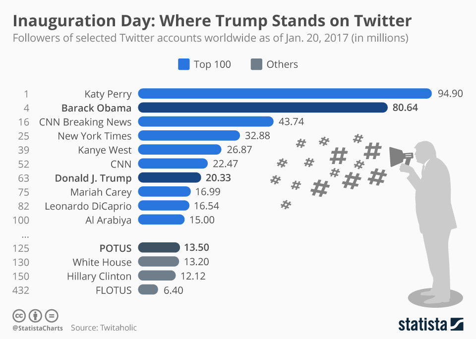
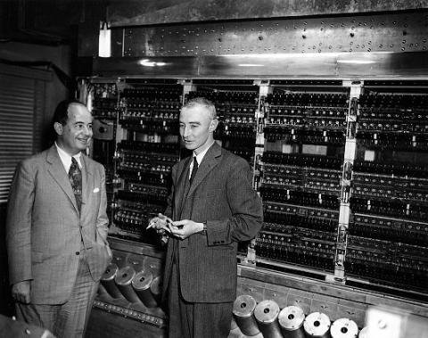
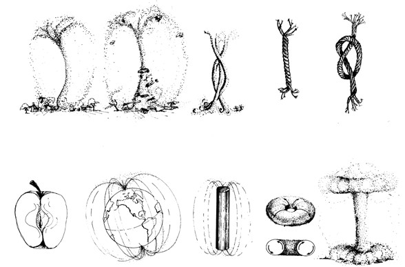
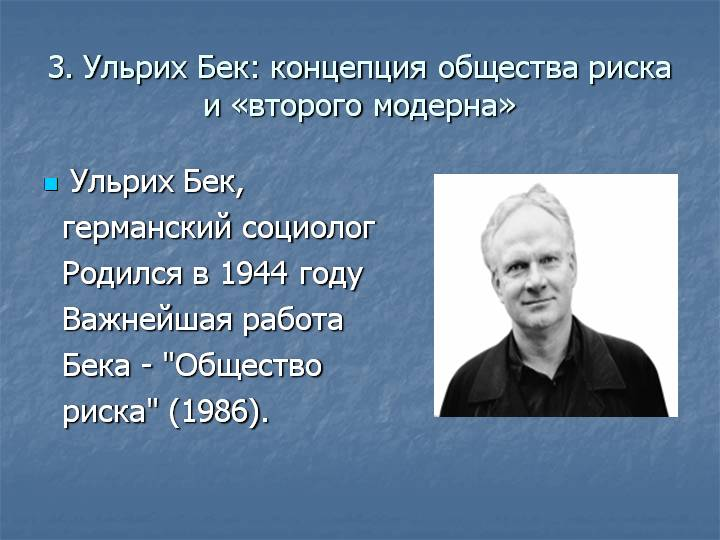

Global Scientific Dialogue: Introduction For Students¶
University is about more than getting a degree certificate. Over the three or four years that you are at university, there are many things that happen which will profoundly affect the way in which your life will develop. Very few of these things will concern knowledge of economics, business, environmental management, or whatever it is you happen to be studying. All of these things will involve conversations: with friends, fellow students, teachers, girlfriends and boyfriends, flatmates, employers, people you meet by chance, family members, bank managers, university administrators, and so on.
This book guides you through a series topics for conversation about the world today: about your future work, your hopes for career. And about technology, science, art, creativity and interpersonal engagement. It has been assembled in collaboration between academics from the University of Liverpool, University of Hamburg and teachers at the Far Eastern Federal University. Some of the perspectives come from different disciplines: tourism, management, environment, and so on.
In all of these conversations, individuals come from different backgrounds, they have different problems, they have different skills, they have different political views, but somehow, they all have something to offer which anyone can unlock if they really know how to talk to each other. One of the most important skills in life is knowing how to engage with people from many different backgrounds, skills, and knowledge. This is a skill which cannot be taught as a single topic. It has to be introduced as a challenge to interface with many different ways of thinking and many disciplines. This is what Global Scientific Dialogue will do.
Global Scientific Dialogue is unlike any course you will study at University. Indeed, we think it is a unique course worldwide. To start with, it is not a course which runs for 14 weeks, with assessments at the end. It is a course which runs intensively for two weeks. In those two weeks, you are going to be introduced to a rich array of different ideas, ways of thinking, technologies and students from many different courses in the Management School.
We want you to talk to each other about the things which you see and engage with. Your teachers are not experts in any of the ideas and fields that will be presented to you. Indeed, we don’t yet know how many of the topics which are going to be presented to you are going to change the world, or disappear into obscurity. Your teachers are, however, going to encourage you to ask questions like:
What do you mean by that?
Can you think of an example where that isn’t true?
What does it mean to be ‘right’?
Can you think of another way of describing that?
These are questions which we should ask each other all the time. In an uncertain world, we need to understand each others’ uncertainty. But there is a skill to asking powerful questions, and cutting to the heart of the issues in organisations, businesses and society that really matter. Global Scientific Dialogue is about helping you to develop these skills to ask powerful questions of each other.
The Core principles of the course¶
Wicked Problems¶
In all fields of work today, individuals are dealing with complexity. There are many problems in the modern workplace which do not appear to have easy solutions. Sometimes these are called “wicked problems”[@rittel_dilemmas_1973]. Rittel describes Wicked Problems as:
“problems that are difficult or impossible to solve because of incomplete, contradictory, and changing requirements that are often difficult to recognize.”
Examples of wicked problems include the management of risks in healthcare, or the management of the environment, or in the stimulation of innovation in an economy, or in attempts to encourage students and staff to learn new things in a university. In none of these situations is there a clear ‘right answer’: in all of them, there are degrees of uncertainty with which workers have to negotiate.
In each of these examples, wicked problems present many different dimensions: some scientific, some technological, some communicative, some cultural, some creative, and so on. No single perspective provides a way to dealing with the problem. The best good teams can do is to talk and listen to each other in order to act informed by a wide range of perspectives and disciplinary knowledge.
Technology is increasing the complex demands of work, and it is ever-more important that students understand the nature of highly complex ‘wicked problems’.
Creativity, flexibility, understanding of technology, communication and the ability to communicate across many different disciplines is extremely important in helping to ensure that wicked problems do not become major disasters in the workplace. That means that students need to learn new kinds of skills: it is not enough to have knowledge of a single subject. You need to be creative, flexible, to understand technology and to be able to communicate with many different kinds of people.
Global Scientific Dialogue is a course which teaches approaches to dealing with ‘wicked problems’. On Global Scientific Dialogue you will encounter many ideas which lie outside your specialised subject area. These include:
Current scientific thinking in physics and biology
Trans-disciplinarity
Teamwork
Conversation
Innovative uses of technology
Understanding data
Listening
Creativity
Although you have gained much disciplinary knowledge in the various fields of management and economics, this course complements your disciplinary knowledge by providing a way of connecting different aspects of knowledge with your understanding and curiosity about the real world.
There is no ‘one-size-fits-all’ approach to this. Each of you will have to find your own way, by tuning-in to the things that interest you.
This book has been prepared to help you. Although it is organised into chapters, it is not designed to be read from cover-to-cover. Instead, open it at a random page, and study what you see. Then open it at a different page and study that, comparing it to what you saw before.
Each page contains a different topic.
Each topic has a series of questions for you to ask yourself
Each topic has a body of text which explains why the topic is important
Each topic has links to literature and other resources to help you think about the topic.
When you open this book, open your mind. Your brain is the most powerful computer in the world. Let it make the connections as you let your imagination and curiosity wander. We hope you enjoy the experience!
Technology¶
Why Technology?¶
KEY QUESTIONS:
How much time do you spend online?
How much time do you spend responding or browsing social media?
Could you live without your phone? or the internet?
WHY DOES THIS MATTER?
Technology has fundamentally changed the environment. You are the first generation who cannot remember a world without the internet.

Technology is transforming the world of employment. Many traditional jobs have been automated, and many of the traditional careers like law, teaching, business and management have been fundamentally and unrecognisably transformed by technology. Whatever career you choose for yourself - whether teaching, medicine, stock trading, even being an artist - it is highly likely that much of it will involve staring at screens and working with software.
Technology is always changing. It will always continue to change.
WHERE CAN I FIND OUT MORE? https://www.youtube.com/watch?v=WL0Dj50x2Gs
The Computer¶
KEY QUESTIONS:
What does the computer do to humans?
What has the computer done to society?
How can we live in harmony with computers in the future?
WHY DOES THIS MATTER?
Technology and computers allow new forms of control over humans.
Computers have created a new kind of human-machine system in society, where constraints can be very easily manipulated. We don’t fully understand how our new human-machine system is different from the social system of our parents.
Computers facilitate the manipulation of constraints. The way a computer screen presents changing possibilities for action as we type a phrase into a search engine, click on the hyperlinks which are presented to us, and then negotiate whatever new possibilities for action have been programmed into particular webpages, illustrates the way that constraints can be changed.

The human experience of this process reminds us of the human-machine system we are in: very real emotions arise in response to mechanical processes, not dissimilar to the fundamental emotional impact of physical constraints such as prison walls, one-way traffic systems, central heating or alarm clocks.
The word ‘com-puter’ comes from latin “com-putare”. ‘Putare’ means to comtemplate - so the computer is means of contemplating-with. With what kind of science might we investigate this, and with what kind of tools might we now organise ourselves?
WHERE CAN I FIND OUT MORE? https://www.youtube.com/watch?v=uKM9ZuQB3MA
The Internet as a ‘Lifeworld’¶
KEY QUESTIONS:
How has the computer affected what we think of as ‘real’?
How has the computer affected what we think of as ‘true’ or ‘false’?
How has the computer affected the way we feel?
WHY DOES THIS MATTER?
The concept of ‘Lifeworld’ is a way of talking about your everyday environment: everything that you think of as being the ‘real world’.
Each of us has different views of reality, and while some things like rocks and trees appear to be universal, we only think this because we observe others behaving in predictable ways with rocks and trees.
Something happens between us in the ‘real world’. The word ‘intersubjective’ describes what happens between us. Husserl and Schutz both referred to the concept of the ‘lifeworld’ as the context within which intersubjective engagement occurs.

The computer has transformed the Lifeworld of everyone. Have our lifeworlds become unstable? The one shared environment within which our expectations could be coordinated has changed into multiple lifeworlds within which individuals move in and out.
Even in face-to-face settings like lectures, students will often inhabit different lifeworlds as they explore social media or other online distractions.
WHERE CAN I FIND OUT MORE? https://www.youtube.com/watch?v=sUja1X-AMyo
Social Media Networks and Communication¶
KEY QUESTIONS
How does the number of people on social media change the way we choose to communicate?
How do we decide which media platform we will use to communicate?
WHY DOES THIS MATTER?
The diagram above illustrates the communication challenge of social media
A sender thinks of a message to send over an electronic connection which contains ‘noise’ of different kinds (for example, different understandings, different cultures, etc)
There are many (millions) of possible receivers
Among one or two of those receivers, somebody will understand the message and forward it on to an even larger audience.

Confirmation Bias and Trolling¶
KEY QUESTIONS
Why has social media seen an explosion in online abuse, misogyny, racism, trolling, stalking and fake news?
What is it about online communication that means that people feel free to say things which they wouldn’t say face-to-face?
WHY DOES THIS MATTER?
‘Confirmation bias’ is the name given to how communications are shaped by the communications of others.
Social media provides ways in which a very large audience can be manipulated with messages which many might disagree with, but which get passed around the internet.
‘Trolling’ is a form of abuse which relies on confirmation bias. Abusive or thoughtless messages are made because a community exists that will approve of them, but also such communities will also approve of the disrupting effects of those messages.
The selection of audience over utterance or multiple description can exacerbate political uncertainty to which institutional structures have to react.
Sometimes, the reaction of institutions like governments makes the uncertainty worse.

 WHERE CAN I FIND OUT MORE? https://www.youtube.com/watch?v=QRut1CWws0U
What does technology do?¶
KEY QUESTIONS
When somebody invents a new tool, how often does it provide a new way of doing something we could have done before?
How often does it provide a way of doing something which there was no way of doing before?
Why does one technology replace another? Why do some technologies fail to find users?
WHY DOES THIS MATTER?
Any new technology creates a new option for doing something. A long time ago, the only way of moving around would have been to walk, or to ride a horse. New options were created by railways, cars, planes and so on.
It’s the same with communicating: once upon a time, we would have to have been with the person we are talking to. New options were created by writing, printing, the telephone and the internet?

Today we have bewildering choice: whether to write a letter, an email, a tweet, a text, a phone call?
Every new option for doing something creates more uncertainty in the decision to do something: Technology creates uncertainty
Technology can also limit our options for acting in certain ways: a locked gate or fence can constrain where humans can move in the world.
Computer systems today present users with ‘forms’ for them to fill in information like your name, address, phone number, password, etc. They constrain: Technology limits options.
Technology like computers do use algorithms to generate new ways of looking at the world which without of them we would not have access to.
Technology amplifies descriptions of the world.
The computer does all of these three things at once.
Technology and Feedback¶
KEY QUESTIONS
In what ways are you like a robot?
In what ways are you like a plant?
How do you adapt to your environment?
WHY DOES THIS MATTER?
The modern computer was developed in the 1940s as a consequence of technological innovations which arose from the Second World War.
One of the principles of the modern computer was the concept of feedback: where a system’s outputs are connected to its inputs. It was noted that systems with feedback exhibited ‘lifelike’ behaviour, and many scientists were fascinated by this lifelike behaviour right at the beginning of the computer’s evolution.
Today’s technologies of AI and Big Data rely on feedback. More importantly, most of the techniques and technologies of AI are not new, but were invented at the same time as the digital computer - in the late 1940s by some of the leading figures of cybernetics: Warren McCulloch, Norbert Wiener, John Von Neumann
What is new today is that we have wired every human being on the planet into an information network, so that the principles of intelligence and feedback imagined in the 1940s are now operating on human beings within this network.
Russian cybernetics and computing started after the death of Stalin, who had banned cybernetics because he thought it was anti-communist. People like Victor Glushkov were pioneers of computing in Russia.
WHERE CAN I FIND OUT MORE? https://www.youtube.com/watch?v=q_mtmmrGhEw
{width=”columnwidth”}
Decentralisation¶
KEY QUESTIONS
Does the internet have to be made of servers which store files accessed by users who type web addresses?
What happens when one of those servers (e.g. google) stops working?
Is there an alternative way of organising files where they exist everywhere, rather than a single place? What are the implications of organising things differently?
WHY DOES THIS MATTER?
When the internet was developed, the idea was that every machine should be connected to every other machine, with no central point of control.
The protocol through which the web works, Hyper-text Transport Protocol (http), relies on having servers which deliver documents.
As the web has evolved, it has reproduced the centralised structure of society where corporations and governments have high-profile websites. So instead of a free and open web where everyone is equal, we have a web dominated by a few corporations.
Web decentalisation focuses on how to reduce the burden on single servers by spreading files over many servers. It also looks at distributing internet access to parts of the world where building infrastructure isn’t viable like rural areas. It also seeks to address citizen worries about surveillance.
Blockchain is one form of decentralisation, but there also emerging technologies like the Inter-planetary file system (http://ipfs.io), and a few similar decentralising protocols like DAT (https://datproject.org/).
The hardware to support decentralisation is also developing. The Gotenna device (see https://www.gotenna.com/pages/mesh) is a small radio repeater which carries a signal for 4 miles, and can easily form a mesh network with other Gotenna recievers in the neighbourhood.
WHERE CAN I FIND OUT MORE? https://www.youtube.com/watch?v=X2u29w4ejPQ
Blockchain and Bitcoin¶
KEY QUESTIONS
Is a currency possible without a central bank?
If an institution like a bank can be replaced with technology, what about other institutions like universities?
If institutions provide trust in a currency, how does technology establish an equal degree of trust?
WHY DOES THIS MATTER?
One of the functions of institutions like banks, universities or hospitals is to provide trust in their services. People use the institutions because they have trust in the honesty of what the institution does.
A banknote, for example, usually contains a ‘promise’ by the bank to pay the sum which is written on the paper BitCoin provides a way in which trust can be established simply with an algorithm, rather than requiring an institution.

Equally important is that the BitCoin algorithm is a distributed technology called a Blockchain which doesn’t store details of transactions on any single server.
Instead, the Blockchain algorithm is a “chain of digital signatures” which act as an open and transparent ledger of transactions in the Bitcoin currency [@nakamoto_bitcoin:_nodate]
The blockchain has two principal innovations which have ensured that the ledger is trusted. Firstly, the entire blockchain - the list of all transactions - is distributed and duplicated throughout the internet. Secondly, the veracity of the blockchain ledger is assured by a process called ‘mining’. This is a data-intensive process which aims to identify any anomalies in the ledger. Mining serves a dual purpose: whilst it ensures the ledger is accurate, it also rewards those who find inconsistencies with the creation of new Bitcoins, thus tying the mechanism of verification with the control of the money supply (a function normally carried out by a central bank) [@vigna_cryptocurrency:_2016]
Artificial Intelligence¶
KEY QUESTIONS
How does Google translate work?
What might AI be able to do in the future?
What will it not be able to do?
WHY DOES THIS MATTER?
Simple machines with feedback can produce life-like phenomena. For a long time, people have asked ‘Can we build an artificial brain?’
In the 1950s and 60s, cybernetics was the emerging discipline within which these developments could be considered together.
What we now call ‘machine learning’ also belongs to this period. Machine learning has its roots in the work of one of the pioneers of early cybernetics, Warren McCulloch. McCulloch saw that the neural structures of the brain were multiple interconnections. In describing the logic of this structure, McCulloch coined the term ‘heterarchy’.
Neural networks have many interconnected nodes and these can be trained to identify the different characteristics of “a thing to be recognised”. For example, if we want a neural network to recognise a picture of a rabbit, the network is exposed to many pictures of rabbits (a training set). With enough pictures, it learns the characteristics of ‘rabbit-ness’ from these so that new images of rabbits can be successfully identified.
Google Translate works in a similar way: it has millions of examples of text in different languages which it feeds into its neural network. That learns how to convert one to the other. It also learns from the preferences of users when they use it.
Machine learning depends on having thousands of items to train it. If thousands of items are not available, machine learning is unlikely to be very good.
WHERE CAN I FIND OUT MORE?

Google has an open source machine learning project called TensorFlow, with many examples of machine learning: https://www.tensorflow.org/
There are some impressive demos of machine learning in the arts as part of the Magenta project: https://magenta.tensorflow.org/demos
Surveillance and Big Data¶
KEY QUESTIONS
How much does Facebook, VK, Whatsapp or your internet service provider know about you?
Is it a problem that technology companies know so much about you?
Is it a problem that governments might know so much about you?
WHY DOES THIS MATTER?
Everything we do online records data which is sent back to the providers of online services we use.
Providers of online services adapt the service they provide to us based on what they know about us: so if you shop on amazon for something, you will receive adverts for that thing in other web pages.

This recording of personal data is unprecedented in human history: it is not the ‘connectedness’ of people that is new with the internet (we have always been interconnected as human beings); it is the capacity for the strategic organisation, recall and manipulation of data about humans to then change the behaviour of humans.
The collection of personal data is related to the centralisation of the internet. If the internet was decentralised, then personal data could be stored under the control of the individual who creates it.
Individuals could then sell their own data to corporations if they wished.
The Cambridge Analytica scandal recently showed how personal data is being used by large corporations for commercial and political advantages.
WHERE CAN I FIND OUT MORE? https://www.youtube.com/watch?v=HF7FpoolZDQ
Attenuations¶
KEY QUESTIONS
What would you rather share: your Facebook/VK password or your toothbrush?
In what ways do computers present you with barriers to doing things?
WHY DOES THIS MATTER?
Technology forces us to behave in certain ways, demanding use of electronic forms, passwords, user permissions, firewalls and so on.
The earliest example of the form was developed during the first world war. Form A2042 was the name given to the ‘Field Service Post Card’, upon which soldiers could send brief messages home by crossing-out the options which did not apply. Paul Fussell claims it was
‘the progenitor of of all modern forms on which you fill in things or cross out things or check off things, from police traffic summonses to “questionnaires” and income-tax blanks.’ [@fussell_great_2013]
The Field Service Post-Card is an attenuator which reinforces control by a central authority or hierarchy (in this case, the British army). The form’s restricted structure prevented soldiers saying too much.
Hierarchies maintain themselves by attenuating the flow of information between themselves and their environment.

Today’s computer forms do more than attenuate the communication of individuals. Computer tools also amplify the patterns of behaviour gained by capturing many people engaging with the form. Modern computer technology can dynamically adapt the constraints within which users engage with the system.
social media platforms present content to users which in a way where the behaviour of users might be anticipated.
WHERE CAN I FIND OUT MORE
Some More Questions about your future and technology¶
Are you going to get a job without understanding where technology is going?
Why is it important to understand technology?
Is a good society possible in a world of technology?
What should politicians understand about technology?
Art and Creativity¶
Artists and Scientists¶
KEY QUESTIONS
Is it possible to articulate a scientifically-grounded description of the activity of a creative artist?
What do artists and scientists have in common?
How are they different?
WHY DOES THIS MATTER?
Artistic thinking seems fundamentally different from scientific thinking; the type of people who work in the sciences and in the arts seem fundamentally different. Yet great original scientists such as Tesla, and great artists such as Leonardo appear to have much in common.
Scientists create abstractions which describe the world with equations and models. Artists create abstractions which describe the world in paint, light, sound, movement.
Both produce multiple descriptions of the world, and generating new possibilities for looking at the world. Artists are important because they show us how to look at the world differently.
HOW CAN I FIND OUT MORE? https://www.youtube.com/watch?v=jt218332bRQ

Are you an artist?¶
KEY QUESTIONS
How many times do you take photographs on your phone?
How many times do you post photographs on Social Media (VK, Facebook, etc)
What are you doing when you do this?
How many descriptions of your life are on social media?
WHY DOES THIS MATTER?
If artistic thinking is about creating multiple descriptions of reality, then we are more artistic than we might think!
Every time we take a photograph we create a description. In posting on social media, we add that description to our other descriptions which are there. We also add it to the descriptions of others.

However, there is a difference between what we do and what an artist might do: artists assemble multiple descriptions of things so that they become coherent.
Artists find the common pattern between different descriptions. Artistic skill involves manipulating multiple descriptions to reveal their common pattern.
Finding a common pattern is a way of speaking about a deeper sense of reality.
WHERE CAN I FIND OUT MORE? https://tinyurl.com/yajfabnj
Multiple Descriptions in Video¶
KEY QUESTIONS
If you want to learn to fix a leaking tap or a fault in your car, do you look for some text on Wikipedia or do you look for a YouTube video?
When you watch a youtube video, what happens to you over time?
At a key moment of surprise in a video, what are the elements which cause the surprise?
WHY DOES THIS MATTER?
Video presents multiple descriptions of the world over time.
The multiple descriptions presented by video have many dimensions and change over time.
Edgar Morin, in his book “Cinema and the imaginary man” [@morin_cinema_2005], details the different descriptions that the cinema presents. These include:
the way that light and shadow changes
the way that the size of objects change
the way that the sound and music of a movie changes

newpage
the way that speech changes
the way that the camera moves
the cutting of one shot to the next
… and so on …
Morin’s different dimensions are related. In asking how YouTube communicates multiple descriptions over time, we can ask about the structural relationship between its different elements.
Many of these issues of the moving image were considered in Russian cinema - particularly in the work of Vertov and Eisenstein.
WHERE CAN I FIND OUT MORE? https://www.youtube.com/watch?v=ibhXQsZBT8k
Multiple Descriptions in Poetry¶
KEY QUESTIONS
How is poetry like video?
How is poetry like science?
How does a poet describe something which has no name - like a feeling?
WHY DOES THIS MATTER?
Text appears to be a much less rich medium than video. However, in poetry, text can be used to convey deep things which lie beyond any individual word.
The way text is able to do this is by layering different descriptions of something on top of one another.
In poetry, descriptions are not just in the words themselves, but in their rhythm and in the way that they rhyme.
With the kind of overlaying of descriptions Ezra Pound describes how it is that words are assembled from other words. To define ‘red’, for example, Pound asks
“How can the poet to do it in a picture that isn’t painted in red paint? He puts (or his ancestor put) together the abbreviated pictures of
ROSE CHERRY IRON RUST FLAMINGO
Pound argues that this
is very much the kind of thing a biologist does (in a very much more complicated way) when he gets together a few hundred or thousand slides, and picks out what is necessary for his general statement. Something that fits the case, that applies in all of the cases.”
WHERE CAN I FIND OUT MORE? https://www.youtube.com/watch?v=95n28deaPFg
Computer-generated Objects¶
KEY QUESTIONS
Could a computer be an artist?
Much modern art now uses computers - what do the computers contribute to artistic expression?
What is the difference between a computer-generated object and a natural object?
WHY DOES THIS MATTER?
The computer generates lights on a screen to create virtual ‘objects’. These virtual objects can be easily manipulated, and algorithms can generate infinite variations of an object
Human beings point at computer-generated objects and in the process reveal something about themselves in relation to them. Since there are many different computer-generated objects, there are many possible ways in which individuals might reveal something about themselves.
With 3D printing, computers are able to create an increasing array of physical objects, including paper documents, 3D printed models and even buildings.

Practical uses of computer-generated objects include the use of adaptive algorithms to maximise the performance of a vehicle (for example, ‘genetic algorithms’), or the use of shared 3D architectural plans in the design of a building (a technology known as ‘Building Information Modelling’)
Virtual reality is another example of computer-generated objects which provide multiple descriptions of the world.
Visualisations (or ‘visual analytics’) of data can also provide many different descriptions of reality, highlighting particular features of the data about which people can talk.
WHERE CAN I FIND OUT MORE? https://www.youtube.com/watch?v=k9NVJyV-yoM
Emoji communication¶
KEY QUESTIONS
Why do people send smileys, or WeChat stickers to each other in communications?
What is the difference between using a word for something and a sticker?
If you were to respond to this question with a sticker, what would it be?
WHY DOES THIS MATTER?
Since the advent of texting, communications have been increasingly augmented with pictures and symbols.
Each sticker has particular structural properties which are presented in a single moment. Many stickers are animations, and present information over time. The structure of single moment is what is called synchronic and the unfolding over time is called diachronic

Conversations work in a similar way: they comprise diachronic and synchronic aspects, each contributing multiple descriptions which are coordinated throughout the process.
Combining stickers and words creates complex mixtures of different elements all of which are saying similar things in different ways.
When you send stickers to each other, are you being an artist?
Creativity and Happiness¶
KEY QUESTIONS
Does being creative make you happy? If so, why?
Is mental illness related to creativity?
When you express a feeling that is inside, what changes occur in your environment?
When you express a feeling that is inside, what changes occur in you?
WHY DOES THIS MATTER?
The creative process is one of the highest attainments of the human intellect. Within hierarchies of learning such as Bloom’s taxonomy [@bloom_taxonomy_1956], we find ‘creativity’ at the top of a range of intellectual achievement from memory recall at the bottom to synthesis and analysis in the middle.
In psychoanalytical approaches to the creative process, it has been suggested that creativity is a state of being which connects the Ego (the self) with the Id (the unconscious) in a continual process [@read_education_1958; @ehrenzweig_hidden_1968; @milner_not_2010].
Mental illness is characterised as “creativity gone wrong”[@ehrenzweig_hidden_1968].
This can be compared to Freud’s therapeutic process which is conversationally-oriented (a ‘talking cure’), drawing out utterances from the patient where the ‘primary process’ material of dreams is summoned into the world of the Ego and language.
The cure for psychological trauma through this conversational process lies in the articulating of psychodynamic blockages and bringing them into the therapist-patient conversation.
 Labyrinth (sequential
structure) of creative search. The creative thinker must move forward on
a broad front, revealing many options. He should get a comprehensive
look at the whole structure of the way forward, without being able to
focus on any one opportunity.
Labyrinth (sequential
structure) of creative search. The creative thinker must move forward on
a broad front, revealing many options. He should get a comprehensive
look at the whole structure of the way forward, without being able to
focus on any one opportunity.
Mental Process, Individuation and Successful people¶
KEY QUESTIONS
What is it to know who you are?
How have successful people, across all fields, developed such a strong sense of self-identity which gives them confidence to act in the world?
What is the balance between mind and action among successful people?
WHY DOES THIS MATTER?
‘Individuation’ is Jung’s term for the process whereby the self emerges from undifferentiated unconciousness.
The essential concept of a dynamic relation between the components of consciousness is similar to Freud’s relation between Ego, Id and Superego.
What happens between the therapist and the patient in psychoanalysis is a process of drawing-out things from the subconscious into consciousness, through turning subconscious phenomena into communications with the therapist. Психический процесс, индивидуализация и успешные люди
Rebalancing is essential to individuation: it is what happens when the uncertainty of the psyche is balanced with the management of uncertainty of social relations to the point where the individual can see themselves as ‘whole’ and distinct from other individuals and other things.
In Jungian psychoanalysis, individuation is assisted through recognition of fundamental archetypes in what Jung calls the collective unconscious.
Uncertainty¶
KEY QUESTIONS
When you are uncertain about something, what do you do?
To what extent is uncertainty in the individual mind, and to what extent is it in the social environment?
Why in conversation important for the management of uncertainty?
WHY DOES THIS MATTER?
Uncertainty is present in the individual mind - nobody is entirely sure of everything
Uncertainty is also present in the social environment: because nobody is sure of anything, there is much argument about the meaning of things, political issues, scientific knowledge, and so on.
Systems modelling techniques can help in exploring the relationship between the management of uncertainty in the psyche and the management of uncertainty in the environment.
Drawing the uncertainty management process in this way helps to connect both the psychodynamic mechanism of Freud with the relational mechanism of Bowlby in a coherent way. It further suggests that the damage to attachment relations will inevitably have psychodynamic effects.
The struggle to manage uncertainty with regard to proximity to a caregiver must be related to some deeper uncertainty concerning the undifferentiated experience of a baby (and indeed, the mother), and the more concrete ‘categories’ of experience which arise whereby ‘proximity’ becomes a thing over which the child attempts to exercise control. In this way, the undifferentiated subconscious of the baby and the mother, and the mechanism by which the uncertainty of the subconscious is managed form a coherent part of the attachment process.
Generosity¶
KEY QUESTIONS
How might generosity help to manage uncertainty?
Are artists generous in the way they express themselves?
Is being open in the way that emotions are expressed similar to being generous?
WHY DOES THIS MATTER?
Imagine giving a present to someone: a gift is a highly complex object open to many interpretations. It’s meaning is often ambiguous. It is this ambiguity which makes it powerful.
When exchanging something for money, the meaning and value of the exchange must be clear to all who participate in it. A gift, however, is an object which functions by revealing something of the inner worlds of the giver and the receiver.

A gift is an invitation to reveal individual uncertainty to one another, bringing it into the social domain where conversation can produce new dynamics which maintain social cohesion.
Anthropologist George Bataille [@bataille_accursed_1991], thought deeply about gifts. Influenced by Mauss’s concept of potlatch [@mauss_gift:_2011], Bataille argued that gifts within communities were processes of acknowledging the fundamental uncertainties of existence.
In giving, Bataille argues that squander or waste was then the principal act, and in primitive society it took the form of human sacrifice and lavish feasts.
In modern society it can take the form of exuberant behaviour - from art to football matches.
Why Science Matters¶
Physics¶
KEY QUESTIONS
Everybody is told in school about mass, space, time and electric charge. But what are these things? How do we know they are real?
Why is there no coherent uncontested theory of everything which unites relativity with quantum mechanics
WHY DOES THIS MATTER?
There was a time when science believed that the natural world made itself available to calculation and prediction. Scientific observation produced objectivity.[@wiener_human_1988]

Scientific facts were indisputable, and the scientific practices of physics became the blueprint for inquiry into society, economics, the arts and education.
Einstein’s questions concerned the perception of scientists: perception was relative to light, space and time
In Quantum Mechanics observation was not only relative to the context in which it acts, but tied-up in the very structure of the natural world: observation changes the world.
Consequently, modern physics has become a process of accurately measuring uncertainties expressed as probabilities. This is what physicists are talking about when they talk about a ‘wave function’.
Biology¶
KEY QUESTIONS
Which came first, the cell or DNA?
How does a molecule (DNA) come to be about another molecule?
What is the relationship between cells and atoms?
WHY DOES THIS MATTER?
Life is cellular. But what is a cell? In school we learn that biology is a very different subject from physics. Biology concerns living processes, feedback, homeostasis, and so on. Physics concerns eternal mechanical laws. We accept that biological systems are made of atoms and molecules, but the connection between the processes of the mechanisms of atoms and molecules and the living processes of a growing embryo are shrouded in mystery.

What would science look like if we saw biology and physics as one? The impact of Quantum mechanics on biological systems is exciting a lot of interest at the moment, as biological phenomena such as sensation are being successfully explained by Quantum phenomena.
DNA is a molecule which, biology tells us, is about other molecules. That means the molecules in DNA refer to the molecules in proteins which are expressed by it. How can a molecule be about another molecule? Where did that begin?
In both biology and physics there are a large number of basic things which we do not know. What happens at the quantum level? What is mass, time or space? Everyone talks about ‘energy’ - but what’s that? Why is it that everything in nature appears to be meshed together - planets, plants, stars, man, consciousness?
Communication and information appear to be fundamental things at the subatomic level. Yet the real challenge here is that this subatomic level gives rise to our own biology and our own consciousness which in turn is able to think about its fundamental origins!
Deciding to Kill the Planet¶
KEY QUESTIONS
Are ecological problems the result of human failure to make good decisions?
How can humans make better decisions?
Why are humans so short-sighted in their development of new technologies?
WHY DOES THIS MATTER?
In the early 1970s, Cohen and March developed a model of organisational decision-making called the ‘Garbage can model of organisational choice’ [@cohen_garbage_1972]. This model described how humans rarely solve complex problems, but instead try to turn complex problems into easy problems by deciding to implement some technology which was already in existence. Cohen and March highlighted that this was often a cause of greater complexity and unmanageability.
When humans make decisions, either at an individual level, or at the level of corporations, governing bodies, ministerial agencies, political conferences, international agreements or pressure groups, brains come together to coordinate a collective course of action suitable for the group.
Damage persists upheld by webs of institutions, including universities, each seeking to uphold their identity and mission, including students who qualify from universities.
Decisions are made within constraints. There are the immediate constraints which include the available information about the situation, the skills and capabilities of individuals, psychology, technological resources, and communication channels for coordinating action.
More subtle constraints include power relations within the decision-making group and the broader political background of decision-making.
Decisions are made in an inter-subjective context, even when they are the decisions by an individual for their own needs. For example, students faced with choosing a subject or an institution must deal with multiple constraints, amongst which include information about judgements by others as to their suitability to a particular course, information about career prospects, information about alternatives, information about costs, as well as self-evaluation of desires, uncertainties, commitment and motivation.
Innovation and Scientific Advance¶
KEY QUESTIONS
Does innovation increase or decrease the complexity and uncertainty in society?
What is the relationship between human innovation and the ecosystem?
In what ways does one innovation lead to another?
WHY DOES THIS MATTER?
On one level, incremental improvement of technology works: today’s cars are far better than the cars of the 1950s, aircraft rarely crash, and medical procedures which would have once been highly dangerous are now routine and safe. Technology evolves: it becomes more efficient, safer and cheaper.
However, developments in equity, freedom, social welfare, education and the prevention of conflict have not been so spectacular.
The technological gain of increased efficiency produce systematic problems elsewhere: cars turns the ground to tarmac, pollutes the air with fumes and noise, causes congestion, results in the travelling of increasing distances and creates a pathological obsession with speed.
A previous generation of fast cars creates new uncertainty which leads to the next generation of fast cars. The search for new medical procedures and drugs is a reaction to the uncertainty produced by the previous generation of drugs and procedures. The creation of new ways of measuring the performance of social systems a reaction to the failure of existing ways of measuring social systems.

Computers and Science¶
KEY QUESTIONS
Could scientists be replaced by computers?
What areas of scientific investigation do not involve computers?
Since computers manipulate information, what is information and how does it relate to science?
WHY DOES THIS MATTER?
After the advances in physics in the 20^th^ century, computers have become essential tools for calculating probabilities rather than definite objective observations.
By the 1940s, computers were being used to calculate the solutions to the statistical equations of Boltzmann and Gibbs: theoretical development could be accelerated with mechanical aids to computation.
In the years to the present day, the computer has transformed science to the point of dominating it. The sophistication of statistical analysis has been exploited in crunching ever-vaster amounts of data (such as the human genome) producing new patterns and descriptions which reveal new insights.
Computer-generated models appear to imitate nature displaying predictive power in their behaviour without any underlying hypothesis, and results of search routines upon the vast database of resources on the web can easily create the impression that the world is the internet.
This has led to an instrumentalisation of scientific inquiry. Advances in machine learning, off-the-shelf software for crunching social science data, modelling tools from engineering to biology create a scientific environment where inability to control the available software is a greater hindrance to professional success than the inability to think critically about what is being experienced.

DNA and Information¶
KEY QUESTIONS
If DNA contains information, what is this information the same as information in a computer?
Do enzymes and proteins also contain information? How does this information relate to the information in DNA?
How do the cells at the end of the baby’s finger know they are at the end of the finger? Does DNA tell them that?
WHY DOES THIS MATTER?
Nobody knows what information is: there is no coherent definition which unites information in DNA with information in the computer, or information in physics.
Yet the sequencing of information in DNA and genetics is now a huge industry. Most of this work is dominated by large-scale computer-driven research. There are worries that this focus on computer-driven research will drive out the space for thinking or rethinking the way in which life works. In a recent article, Amos argues that the computer-dominated ‘big science’ is something we should all worry about because:
“genome sequencing offers little science training because most of the work is done by machines and technicians … it is the antithesis of good science, being largely hypothesis-free and involving little experimental design. Why are we placing our few remaining publicly funded eggs into proportionately fewer and fewer baskets?”[@noauthor_big_2013]
Utopian visions for the future of science envisage the ever-increasing power of machine learning and Big data producing answers to fundamental scientific and social problems. On closer inspection, the results of such massive computation, such as the analysis of genetic samples, or the analysis of human behaviour on social media, does little more than amplify the work of thousands of humans were they to endure the boredom of sitting around counting things.
Cellular Communication and Human Communication¶
KEY QUESTIONS:
Is there a relationship between the way cells talk to each other and the way we talk to each other
What is the relationship between cellular communication and physics?
What is the relationship between the cell and consciousness?
WHY DOES THIS MATTER?
Cells communicate through a process whereby proteins are produced by DNA within the cell, and these proteins form receptors on the surface of the cell which connects to proteins in the environment of the cell, produced by other cells.
Cells organise themselves according to a balance between their internal organisation and their external environment. It is a process referred to in biology as ‘transduction’
Drawn abstractly, a cell is a boundary which maintains itself through the balancing of communications within the boundary and communications outside the boundary

Humans communicate similarly by organising themselves according the balance between the internal (psychological) environment and the external (social) environment.
If a cell communicates to maintain its boundary, do humans communicate to maintain their identity?
The extent to which human communication is an identity-preserving activity can be inspected by considering those things which most people do not want communicated (for example, secrets, things which reveal what we really think, but do not want to be known, etc)
Origin of Language - The ‘Symbol Grounding Problem’¶
KEY QUESTIONS
How can something as complex as human language emerge from something simple?
What hope is there for Artificial Intelligence if the complexity of language cannot be reproduced or explained?
When we say human language is ‘complex’, what do we mean?
WHY DOES THIS MATTER?
In the theory of information, the symbol grounding problem refers to the inability to account for the emergence of signs and tokens (words) with referents from basic principles without recourse to apriori distinctions.
The description of abstract mechanisms which show how structures of data can emerge and form the basis of very simple languages has been elusive, although there have been some interesting attempts by Holland (see his ‘echo’ model) and Floridi.

The symbol grounding problem is fundamentally a problem within the broader topic of morphogenesis, and indeed, the emergence of discrete symbols from basic principles is not dissimilar from the emergence of discrete forms from basic principles. They might well be one and the same!
Complexity itself is not well-understood. Human language has lots of variety - many words for many things. But human language also exhibits rich patterns, which appear to be overlaid over one another - like poetry.
Human Emotion and Behaviour¶
KEY QUESTIONS:
What is an emotion? How does it relate to a thought?
Why do certain things like music, football and grief give rise to such strong emotions?
Will machines ever experience emotions?
WHY DOES THIS MATTER?
Emotions on listening to a piece of music, or emotions in watching a movie, or grieving after the death of a loved one are powerful whole-body sensations.
Emotions do not appear to be merely in the brain.
There appear to be connections between the waves of emotion that moves through a person on hearing a music, grieving for the death of a loved one, gazing into a lover’s eyes, cheering at a football match, and so on.
Each effect, as a change to the state of a person, will have a consequent experience associated with it, and each state will therefore tend to move to another state. In moments of intense emotional experience, like bursting into tears, the physical effects of this rushing through us have real physical side-effects.
Phenomena like music are very important in understanding emotion. Recent research on ‘communicative musicality’ is examining the emotional and musical relationships between mothers and babies, for example [@malloch_communicative_2010]
In listening to music, emotion appears to be related to the problem of expectation[@huron_sweet_2008]. This is to say my expectations are normatively constructed, then the degree to which they might deviate from normal conditions may be an index of emotion.

Ecology and Evolution¶
KEY QUESTIONS:
Where have evolutionary processes actually been observed?
What is the difference between Darwinian evolution and creationism?
Do animals inherit the habits of their parents in their genes?
WHY DOES THIS MATTER?
Bateson argues that “today it is quite obvious that [the organism] is not the unit of survival in the freal biological world. The unit of survival is organism plus environment. We are learning by bitter experience that the organism which destroys its environment destroys itself.”
If the unit of survival of an organism is ‘organism + environment’, how are we to understand the environment?
Human development, if it is done in ignorance of the environment - whether it is ecological, political, economic, etc, is going to lead to disaster.
Bateson argues that “the unit of evolutionary survival turns out to be identical with the unit of mind.”
“Ecology, in the widest sense, turns out to be the study of the interaction and survival of ideas and programs (i.e., differences, complexes of differences, etc.) in circuits.”
If we make the error of taking the wrong unit “you end up with the species versus the other species around it or versus the environment in which it operates. Man against nature. You end up, in fact, with Kaneohe Bay polluted, Lake Erie a slimy green mess, and “Let’s build bigger atom bombs to kill off the next-door neighbors.”[@bateson_steps_1987]
Inheritance: Lamarck and Darwin¶
KEY QUESTIONS
How did the elephant get its trunk and the giraffe get its neck?
Do we inherit the habits of our ancestors through our genes?
Is the ‘survival of the fittest’ the mechanism whereby nature evolves?
WHY DOES THIS MATTER?
Darwin has affected us hugely well outside the realm of biology. From evolutionary economics to Marxist theory, anthropology, physics and genetics, each has been touched by the Darwinian mindset.
Bateson argues that Lamarck’s basic idea of the ‘inheritance of acquired characteristics’, whilst being on the surface wrong, was the first to consider the question of ‘mind’ from first principles, using ‘habit’ as one of his axioms. Mind was emergent from habit [@bateson_steps_1987]

Bateson further argues that Darwin’s mechanism, for all its genius, took “mind” out of the equation in the question of survival and replaced it with a process of natural selection.
Recent biological work suggests that Lamarck may have been at least partly right: for example, inheritance of predisposition to asthma correlating with the grandparents’ smoking. Cellular mechanisms of adaptation may be behind surprising patterns of inheritance which go beyond natural selection.
Information¶
KEY QUESTIONS:
What is information?
What is the relationship between information and meaning?
What is it to be ‘in-formed’?
WHY DOES THIS MATTER?
One of the biggest arguments in science today is about the nature of information.
This course is made up of information: it is the background of education. Formal education systems enlist mechanisms for codifying the knowledge and skills of individuals into information.
There is information on the computer screen that you might be staring at reading this. Information is analysed, and the analysis produces more information.
Biologists analyse the information in DNA, and physicists look for the information in Black Holes. 
Information has a measurement developed by Claude Shannon, without whose equations, the internet would not work. In Shannon’s work, Information is equivalent to ‘uncertainty’.
Information is used to make decisions. We are told with better information, we make better decisions. More and more effort is put into generating more and more information.
If we don’t understand information, what do we mean by meaning?
Paradigm Shifts and Analysis¶
KEY QUESTIONS
How do we know we do research right?
What happens when a new discovery turns everything we know upside-down (for example, Copernicus or Einstein)?
WHY DOES THIS MATTER?
Scientific history is full of stories where science was turned upside down. Thomas Kuhn calls these moments a ‘paradigm shift’ [@kuhn_structure_1996].
Such moments are the result of an analytical approach to science, where fundamental generating mechanisms for the world being the way it is are reconsidered from the bottom up.

Most research in almost all fields in universities is not analytic like this, and analytic work is often difficult to get published.
Most research work is instead synthetic: an approach to research which gathers evidence from a variety of empirical situations and attempts to fit an explanatory framework over the perceived phenomena.
Paul Feyerabend argued that the adherence to ways of researching and theories of science which were obviously not right had to do with irrational human processes of defending egos and reputations of scientists and the status of institutions[@feyerabend_against_2010]. He argued that no theory of science should exclude these factors, and that only by acknowledging it would a deeper awareness of the social process of science be possible.
Cosmological Thinking¶
KEY QUESTIONS:
Should we think about the details of particular phenomena, or should we think about how the whole universe gives rise to particular phenomena?
How can a cosmology be verified?
WHY DOES THIS MATTER?
The result of analytical thinking is a deeper cosmology about why the universe is the way it is
Such cosmologies characterise the work of scientific revolutionaries like Newton, Galileo, Einstein. In each case, they radically rethink the story of the universe.
In order to comprehend what underlying mechanisms are, one has to see beyond what is immediately perceived.
Synthetic approaches to science, rather than analytical approaches, dominate most of what goes by the name of ‘research’ in universities: in physics, a unified theory has been the goal for many generations of physicists who have attempted to unify quantum mechanics with relativity and Newtonian mechanics: so far the approach has failed. In biology, synthesis leads to the variety of specialised theories of epigenesis and genetics.
As with physics, nothing coherent has yet emerged, and indeed there is no explanation for the ways in which cells organise to produce hearts, brains and fingers. In medicine, synthetic methods gather evidence of ‘markers’ for disease from genetics, neurology, endocrinology, and so on, and then seeks to explain disease through the presence of markers.
It should not therefore surprise us to know that research efforts into learning and education (of which biological, physical and physiological theories are a subset) lack coherence and explanatory power.
Intersubjectivity¶
Consciousness¶
KEY QUESTIONS
How can consciousness talk about consciousness? How can a brain describe a brain?
How could the presence of a mind-independent reality be proved?
Is our mind in our head? Where else might it be?
WHY DOES THIS MATTER?
The founder of phenomenology, Edmund Husserl, realised that in order to study consciousness it was impossible to escape the problem that whatever an individual consciousness was (and the very idea of individual is problematic) the consciousness of one mind was relative to another.
Husserl considered the idea of consciousness between people, or what he called intersubjectivity. He argued that consciousness emerged between minds in a shared environment, or ‘lifeworld’.
Husserl was primarily focused on the structure of consciousness and his idea of intersubjectivity was framed around the face-to-face interaction between two people. Broader relations to society, contemporaries and ancestors were not considered.
However, consciousness is between people face-to-face, and between people who are not with us immediately, with material objects in the world (like computers), and maybe even between the minds of the living and the minds of dead (how could we know?)
Often neuroscience identifies the mind inside the head: in doing so, it presupposes an objective world of ‘mind’ beyond the mind that makes the observation through MRI scanners!
Consciousness and Intersubjectivity¶
KEY QUESTIONS
Is consciousness in between people analyzable?
How conscious are you now?
What are the observable features of consciousness?
WHY DOES THIS MATTER?
Alfred Schutz made a connection between Husserl’s intersubjectivity and Weber’s sociology. Weber, in defining sociology as “a science concerning itself with the interpretive understanding of social action and thereby with a causal explanation of its course and consequences” [@weber_economy_1978] lacked a theory of human understanding, and didn’t go into much detail about the ways in which human communication occurs.
Schutz saw Husserl’s attempt to describe intersubjectivity as a corrective to this: a comprehensive theory of mind that could be united with a theory of social life. However, Schutz felt that Husserl’s account of intersubjectivity was deficient since Husserl’s main focus in considering intersubjectivity is one-to-one close relations, and ignores the broader dimension of what Schutz called the “world of others”.
world of others, according to Schutz, involves a range of different kinds of intersubjective relations, from intimate face-to-face relations, to distance relations with ‘contemporaries’.
The online world presents a clear distinction between face-to-face engagement and more distant relations. Schutz himself distinguished between between face-to-face engagement, or what he called a “pure we-relation”, and engagement at a distance. He identified what he called a ‘spectrum of vividness’, arguing that the difference between the face-to-face world and what he calls the “world of contemporaries” can be illustrated by the experience of ending a face-to-face encounter:
Communication and Expectation¶
KEY QUESTIONS
Can you communicate with someone if you have no idea of what they think?
When you email somebody, who are you talking to?
WHY DOES THIS MATTER?
The sociologist Talcott Parsons sought to develop Schutz’s ideas about expectation into a more systematic theory of human communication, arguing that what happens in communication was a process of what he calls ‘double contingency’[@parsons_social_2012]. \(A\)’s expectations of \(B\)’s behaviour in response to \(A\)’s utterances are mirrored by \(B\)’s expectations of \(A\) behaviour to \(B\)’s utterances. In an extended correspondence between them, Parsons and Schutz wrestle between a systematic and systems-theoretical characterisation of communication (which was what Parsons sought) and a phenomenological and more subtle characterisation of the development of consciousness in communication (which Schutz was aiming for) [@grathoff_theory_1978].
What Schutz refers to as a “decreasing number of perceptions” suggests that each of the sensory ‘channels’ which carry alternative descriptions of the encounter are degraded with distance. What is constructed from these multiple descriptions is, Schutz suggests (in line with Husserl), a set of expectations about the communication situation without which the making of utterances would be impossible. In other words, I can only write these words now because I have some expectation of the experience of you as a reader.
The meaning of my words is therefore dependent on the coordination of expectations between people who communicate: Husserl called these sets of expectations ‘horizons of meaning’, and so it can be said that what is communicated are not words but expectations or meanings.
Schutz does not suggest that the process of ‘coordinating expectations’ does not happen at a distance, but he does suggest that the mechanisms by which meanings are established and coordinated between people are different in the situation where there is face-to-face contact, and where there is no physical co-presence.
Schutz’s analysis presents some fascinating questions: might he say that a ‘pure we-relation’ is still possible at a distance using a medium of communication (say Skype) which does not decrease the number of perceptions?
{width=”columnwidth”}
Dialogue and Listening¶
KEY QUESTIONS
What happens when we listen somebody carefully?
After listening, how do we formulate a response?
Can we teach people to listen better?
WHY DOES THIS MATTER?
Dialogue involves listening to a greater extent than it does talking
In dialogue there is not necessarily a free choice of talking: what is said is said in the context of what is understood by what is heard by others.
Dialogue articulates a structure which has many levels: a conversations about an object produces a conversation about the conversation about the object, or a conversation about the conversation about the conversation about an object. These different levels of discourse shift over time. What emerges are different discrete strata of construction.
David Bohm believed that at its best, dialogue reflected deeper structures in the universe. The multiple strata of patterns of engagement in dialogue help us to perceive something deeper.
Objects can help with the process of dialogue. When an object is presented (for example a photograph), it invites many different descriptions from different people. When these descriptions are brought together, it produces a richer picture not just of the object, but of the different people who makes descriptions about it.
Teachers are particularly skilled in generating multiple descriptions of the same thing. The process of teaching is a process of generating redundancy: the teacher may say “think about it like this”, or “here’s an example”, or “let me tell you a story about this”, or “What do you think?” (which is an invitation to multiple descriptions produced by others.
Encouraging people to listen requires encouraging people to see the importance of multiple descriptions of things rather than being focused on a single ‘correct’ description. Science is partly to blame for presenting the world in a single description. Modern physics actually tells us that this isn’t how things are.
Unhappiness¶
KEY QUESTIONS
How do childhood relationships with parents affect us in adult life?
What is the relation between ourselves and our environment which makes us unhappy?
What are the factors which help alleviate unhappiness?
WHY DOES THIS MATTER?
Unhappiness may have a systemic explanation. In the study of animal behaviour, it became clear that the relationship between mothers and babies was a systemic relation. If mothers were separated from babies, then the result was distress.
Konrad Lorenz, who was the pioneer of this work, projected his findings on to the human world:
The competition between human beings destroys with cold and diabolic brutality… Under the pressure of this competitive fury we have not only forgotten what is useful to humanity as a whole, but even that which is good and advantageous to the individual. […] One asks, which is more damaging to modern humanity: the thirst for money or consuming haste… in either case, fear plays a very important role: the fear of being overtaken by one’s competitors, the fear of becoming poor, the fear of making wrong decisions or the fear of not being up to snuff… [@lorenz_aggression_2002]
In Lorenz’s work with geese, he noticed how the movement of chicks maintained proximity to the mother. He called this mechanism of maintaining proximity ‘imprinting’ and explored its parameters by replacing real mothers with a wire-frame model which was presented to the chicks within hours of hatching: as a consequence, the baby chicks maintained proximity to this object as if it was the mother. It was a cybernetic experiment where theoretical models and empirical evidence combined convincingly.
Does this suggest that emotions such as unhappiness, grief, anger have their roots in the systemic relation between the child and the parent? More broadly, it may suggest that the relationship between the organism and the environment is the critical determiner of emotion.
If this is the case, then it suggests that issues of experience of emotion have a connection to political issues in the social environment: what R.D. Laing calls the ‘Politics of Experience’ [@laing_politics_1990]
Attachment: The roots of emotion in childhood¶
KEY QUESTIONS
What is the child’s tie to its mother as a systemic relation?
Why does disruption to the child’s relationship with its mother lead to psychological trauma later in life?
Can deep emotional issues be understood in terms of abstract systems?
WHY DOES THIS MATTER?
John Bowlby stated that ” the child’s tie to his mother is a product of the activity of a number of behavioural systems that have proximity to mother as a predictable outcome.”
He suggested that “young children, who for whatever reason are deprived of the continuous care and attention of a mother or a substitute-mother, are not only temporarily disturbed by such deprivation, but may in some cases suffer long-term effects which persist” [@bowlby_effects_1956]
Bowlby called his mechanism ‘attachment’ and expressed it in cybernetic terms: “What principles of organisation are necessary if behaviour is to attain these ends?”. In stating his organisational principle, Bowlby sets the stage for an analysis of personality arising from mechanisms of early life relations and the organisational dynamics of development. He focused particularly on the relationship between the child and the mother - although the issue is really about the principal caregiver of whichever sex.
The demonstration of the thesis demanded attention on what happened if the proximity to the mother is not a predictable outcome. What happened where the mother or father rejected the child’s affection, or attachments were affected by death or drastic changes in circumstance? In exploring this, Bowlby turns to some of the fundamental problems of psychoanalysis.
The consequence of this view was that human behaviour had to be studied relationally. Humans were not individuals, but inter-connected systems: recent research work of addiction supports his findings. [@flores_addiction_2011].
Facilitating Learning¶
KEY QUESTIONS
How do you become a facilitator of discussion rather than a possessor of knowledge?
What is Personal Intellectual Transformation?
WHY DOES THIS MATTER?
During the communicative process, complex theoretical problems are put forward and solved, scientific material is analyzed, the positions of various scientific schools are compared, disputable points are identified and clarified.
The communication between students and the teacher makes it possible to build scientific information in a single harmonious system, to highlight the main points in it, to reveal the position in the proof analysis, and to help students to critically comprehend the proposed factual material, to realize and evaluate it, highlighting the most necessary and discarding the secondary.
The content of communication is information that the teacher offers students through various communication tools. However, the essence of communication is not limited to information exchange. To ensure that the content of the discipline has been assimilated by students at a high level, it is necessary, along with pedagogical tasks, to set and solve communicative tasks.
In teaching, we choose the most effective methods of communication and on their basis to organize productive communication between the teacher and the student.
Successful communication is facilitated by the use of information products and pedagogical technologies aimed at activating students’ thinking. Typically, experienced teachers intuitively use in their work a synthesis of elements of creative learning.
To encourage students to think, documenting experiences and reflections helps to expand the field of inquiry through the consistent formulation of the set of questions “Why?” (Similar to curiosity in childhood), and helps to identify cause and effect relationships, helping to better understand the subject of research and plunge into the research problem.
Risk and Anxiety¶
KEY QUESTIONS
What are you worried about?
Do we worry about more things than our parents did?
Do technological advances create more things to worry about?
Is anxiety evenly distributed in society?
WHY DOES THIS MATTER?
German Sociologist Ulrich Beck argued that we now live in a ‘risk society’, where risks are manufactured both in the creation of new technologies, and in the creation of new risks in the law, the economy, and education.
Beck argues that the distribution of risks is not even: those at the bottom of society are subject to far more risks, with far fewer means of addressing them, than those at the top.
He argues that there is a connection between risk and education: that new technologies create new requirements to learn to use new tools, which increases the risk of not being qualified.
Furthermore, Beck argues that education itself becomes a risk:
“Everywhere educational reform is accompanied by a dependence on education. More and more groups get caught up in the race for educational credentials. As a result there emerge new internal differentiations. Whilst these may still respond to traditional differences between groups, the impact of education makes them fundamentally different from traditional ones. […] In conjunction with novel patterns of upward and downward mobility and increasing local labour mobility as well, new hierarchies and differentiations develop which are internal to social classes. They presuppose the expansion of the service sector and the creation of new occupations.”[@beck_risk_1992]

Constructs¶
KEY QUESTIONS
Are the words you use to describe the world the same as the words others use to describe the world?
Do you mean the same things by the words you use as others do when they use the same words?
Do the words we use to describe the world reveal how the world is, or how we are?
WHY DOES THIS MATTER?
We use words to describe our reality, and reality appears differently to each of us.
Whilst this doesn’t mean that reality is simply language, it does emphasise that the words we use form an important part of the fabric of the world through which we have to find our way.
Finding our way in the world is not something we do alone: we have to communicate with other people. That means that we have to coordinate our understandings of the words we use with the understandings of words by others.
George Kelly’s ‘Personal Construct Theory’ is an approach to analysing the different ways individuals construct their reality by analysing the different words they use in different circumstances.
For example, if I was to classify ‘cakes’, I might think of a variety of ways of describing and categorising them, including “sweet”, “fluffy”, “heavy”, “fruity”, and so on.
The way I use those words may differ from the way other people might use them: so, given a set of cakes, how I categorise them may be different to how others categorise them.
The value of doing Personal Construct analysis is it opens up a broader conversation about where distinctions really lie, and how different people with different distinctions can coordinate themselves.
Interdisciplinarity¶
What are you studying?¶
KEY QUESTIONS
Where is the boundary between the subject you are studying and other subjects?
Are subjects in university real things - do they actually exist in the jobs people do in the world?
If all the theory you are taught was actually true, how different would the world look to the way it actually does?
WHY DOES THIS MATTER?
Each of you is a student studying a subject in the ‘School of economics and management’. What is ‘economics’? What is ‘management’? There are no clear answers to these questions. All that can be said is that they are ‘topics of discussion’. So is that all a ‘subject’ is?… a topic of discussion?
But how much discussion about your subject do you really do in university? In University, subjects are divided into ‘topics’, and assessments are set around those topics. All of a sudden, you are not able to ask what the big ‘subject’ is, because you have small tasks to complete otherwise you will fail your course! And asking too many difficult questions can get very disruptive!
And we are all told that we study the subjects we do because it will help us get jobs. Does it really? Where in the real world is there a ‘topic’ of ‘economics’? Of course, people buy and sell things, create businesses, and so on. But nobody fully understands this basic human behaviour.
The Discipline of Education¶
KEY QUESTIONS
Why is education often boring?
Is education a subject?
What is education for?
Do you need to come to university when you can learn so much online?
WHY DOES THIS MATTER?
There is much confusion about what education is and there is no coherent theory of it.
Education may be often boring because we have a bad theory of education. If we had a better theory, then learning would perhaps be more in tune with the way that human consciousness works.
Boredom itself is a reaction to a kind of oppression.
The topic of education itself is not of the same kind as the topics of physics, maths or chemistry. Sociologist Everett Hughes argued that education was not a discipline but rather “a major complex of arts”. He explains that it is not a discipline:
“in the sense of offering a single order of phenomena which, when observed and/or manipulated in a systematic way, yield a body of consistent theory. In this respect, education is like the other great practical arts - looking after the sick, keeping order, and distributing justice. All of them, however, give rise to a variety of disciplines and, in turn, use many of their results. These arts are the very springs of human curiosity; they are also great consumers of man’s best intellectual and scientific efforts. None of these arts, moreover, is ever completely under the control of the human will, the will of one man or of some small group of men, or even of society at large through its instruments. Yet control over these arts is sought in all societies. The manner of practicing them is the very stuff of the clash of wills and interests; thus, the stuff of politics.”[@hughes_sociological_1985]
Hughes’s distinction between a ‘discipline’ and a ‘complex of arts’ is helpful in the sense that it causes us to ask whether there is a ‘body of consistent theory’ about education
In education, what is accepted as ‘theory’ is often an amalgamation of ideas drawn from different sources and used in a rhetorical way to defend particular interventions or practices.
Distinctions¶
KEY QUESTIONS
What is a distinction?
How is one distinction related to another?
WHY DOES THIS MATTER?
Drawing a distinction between one thing and another is always the first (and essential) step in being able to study something. Distinctions are made about biological species, artistic forms, philosophical positions, times of day, colours, or sounds and movements. Education feeds on distinctions. To study education is to study the way distinctions are made and the dynamics of their interaction.
A distinction is a boundary. It constrains one set of things as belonging to one group, and another set of things as belonging to a different group. In making a distinction about red butterflies, a line is drawn and criteria established to identify whether a particular object belongs on the side of the line which says ‘red butterflies’ and everything else not a red butterfly. The red butterfly distinction is marked by constraining what does not meet the criteria (other distinctions) for a red butterfly. A distinction is a choice of a constraint. The choosing, however, is itself constrained by other things: for example, norms, values, institutions, education and individual expectations.
Every distinction exists within distinctions at a different level. We might make the distinction about butterflies, but where are the distinctions made about the scientific or aesthetic norms, values and expectations within which the butterfly distinction is made? To explore distinction-making as a process, we have to become aware of both sides of the distinction in order to see the complex structures of hierarchies which might be at work in establishing even the simplest judgements about reality.
In education we draw a distinction much like the distinction which Hughes tries to draw. If we want to say education is \(x\), \(y\) or \(z\), then a distinction is drawn with \(x\), \(y\) or \(z\) in a box, and everything that isn’t \(x\) outside the \(x\) box Then we can say that everything outside \(x\) constrains the definition of \(x\). Distinctions become drawable.
In a simple way, Hughes distinction between Education as a complex of arts and what he calls ‘disciplines’ can be drawn as in Figure [fig:educationconstraint]{reference-type=”ref” reference=”fig:educationconstraint”}.
{#fig:educationconstraint width=”columnwidth”}
Drawing it like this immediately raises questions. The arrows between the disciplines in the diagram show a relationship which is not clear in Hughes’s description. Maths and Physics have a relation to education. Education shapes what they are: so shouldn’t they be within the education box? But also Maths and physics have a relationship to each other: mathematical techniques like calculus derived from new theories in physics and astronomical observations. So this diagram isn’t very satisfactory - but the lack of clarity in Hughes’s description becomes apparent through trying to draw it as a diagram.
Transduction: The process of upholding a distinction¶
KEY QUESTIONS:
What is the process that converts an analogue signal to digital?
What is the process that maintains a boundary between something?
If a boundary between one thing and another changes, what happens to other boundaries?
How does society change over time?
WHY DOES THIS MATTER?
If there are many possible distinctions about ‘maths’, ‘education’, ‘hospitals’ or ‘chairs’ how it is that we maintain relatively stable distinctions in society? There must be a process which is responsible for maintaining a coherent and agreed set of distinctions around which we coordinate our social lives, our education system, our scientific practice, and so on. Cybernetics gives a name name to the process of maintaining a distinction: it is transduction.
In engineering, transduction is the process of taking one form of energy and turning it into another - like an electric transformer or a heat exchanger. In those examples, and in every other example of transduction, what results is a boundary - or a distinction.
The transduction process works on both sides of a distinction. By recognising that distinctions are maintained by a process is to recognise that the process may change - and a change to the distinction-making process at one level can lead to changes in the distinction-making process at many other levels too. To change a social system - or indeed any system - we have to ‘tweak the transducers’!
All distinctions are the result of transduction processes.
Societies change when their distinctions about themselves change, and this changes when the structure of their transductions change.
Inside and Outside in economics¶
KEY QUESTIONS
What are the internal economic considerations that businesses must consider?
What are the external considerations that businesses must consider?
WHY DOES THIS MATTER?
Strengthening the economic potential of the enterprise is impossible without improving the planning process, reflecting the process of implementation of innovations. These are internal processes.
The role of the target quantitative criterion in this case can be performed by an indicator of investment activity (the result of cash flow). It is also important to balance the amounts of positive and negative cash flows, analyze the relationship between the cash flow balance of current operations and net profit (loss).
The dynamics of changes in profit should correspond to the change in the balanced cash flows from the current activity. To maximize profits, it is necessary to minimize material costs and ensure the growth of labor productivity by reducing the labor intensity of products and works based on innovations.
The financial strategy of the company should be developed taking into account the risk of non-payments, inflation spikes and other force majeure circumstances.
Financial control is necessary for the timely identification of internal reserves, improving the profitability of the economy, increasing cash savings in the enterprise. Many of these require a consideration of external factors.
The use of an integrated automated management system for the formation of financial statements at the enterprise will allow processing the information base and regularly receive an operative report on its financial status of the company, will become a tool for diagnosis and continuous monitoring of the financial situation.
The use of modern information technologies will ensure the accuracy and coherence of actions of all employees, including those involved in the management process, the strengthening of internal financial control in the enterprise, the aggregation of information based on the processing of indicators of different levels of planning.
As a result, adequate and timely risk assessment will be possible, minimization of costs and effective operation of the enterprise in order to strengthen its economic potential in the face of uncertain market conditions.
Inside and Outside in Tourism¶
KEY QUESTIONS
What might ‘inside’ and ‘outside’ refer to in tourism?
what is the function of a tourism company in maintaining the relations between the ‘inside’ and ‘outside’ among its customers and suppliers?
What is leisure or recreation?
WHY DOES THIS MATTER?
Tourism intertwines culture, economics, ecology and management
Tourist resources are divided into cultural, natural, socio-cultural sites. It should be noted that it was cultural factors /culture that acted and acted as a driver of tourism development.
In the era of globalization, tourism acts as a link in the intercultural development and mutual understanding between peoples.
Tourism as a sphere of recreation is in interrelation with the environment. Recreational areas are very fragile, vulnerable, resources are exhausted.
Sometimes spontaneous, uncontrolled development of tourism creates a number of environmental problems: the destruction of natural landscapes, the modification of components of the natural environment, etc.
Accordingly, the formation of environmental awareness among tourism professionals, the understanding of related scientific branches necessary.
As a sphere of the economy, tourism is an active source of replenishment of the revenue side of budgets of different levels, has a multiplying effect on related industries.
In the tourist professional activity the leading role is occupied by management. Management in the field of tourism has a specific nature, because a tourist product is, first of all, a service product that requires a system approach to management, which is oriented to the development of the human resource of the enterprise and is “sharpened” for the interests of the client.
Meta-Language¶
KEY QUESTIONS
When do you talk about the way you talk?
Why might it be useful to have an agreed way of talking about talking?
How is a language about systems useful?
WHY DOES THIS MATTER?
What has been described as a process of upholding sets of distinctions has a more formal description in cybernetics developed by Stafford Beer.
Beer understood that the fundamental problems of institutions concerned how they made distinctions about themselves: the Viable System Model presented a kind of template upon which institutions and businesses could project their current operations and speculate on new ways of organising themselves.
Beer worked in Chile in 1971, to work with Salvadore Allende on the establishment of a technologically-driven socialist state.
The distinction between an organism and its environment is maintained through a process of attenuation of the environment by the organism, and the amplification of organism’s attenuations through the production of multiple descriptions of it. Any organism must somehow coordinate which parts of its operations to attenuate the environment. This means that as part of the organism there must be a higher-level function which examines the function of the organism’s operations and attempts to coordinate them.
Organism and Environment¶
KEY QUESTIONS
What is the relationship between an organism and its environment?
How does an organism adapt to survive in its environment?
WHY DOES THIS MATTER?
{#ref:basictransduction
width=”columnwidth”}
Organisms are complex systems, but their environment is more complex. Their complexity can be considered as variety and represented as \(V_O\), while the complexity of the environment is \(V_E\)
To survive in an environment, the organism has first to attenuate the complexity of the environment, and amplify its own complexity.
However, if the organism simply reacted to the environment, it would not be able to develop. It also needs a meta-system which is able to steer the adaptations of the organism by observing how the organism adapts.
Recursion¶
KEY QUESTIONS
Why do patterns contain patterns which contain patterns?
WHY DOES THIS MATTER?
{#recursive width=”columnwidth”}
Each level of transduction produces an attenuation of the level below it. Each level of transduction presents multiple descriptions of itself to the level above. The central issue here is that the attenuations are by necessity always approximations.
Each level engages directly with the level below by presenting multiple descriptions of the attenuation that it produces. This process of producing multiple descriptions of attenuation might be thought of as ‘amplification’.
The result of the combined process of amplification and attenuation is that there is error between the multiple descriptions of the world as it is and the attenuated descriptions of it. The central issue is what to do about the error.
Errors are manifested in the multiplicity of descriptions that each level presents to the level above. These multiple descriptions are similarly attenuated and amplified, and similarly produce error at the next level. And so it goes on.
Amplification and Attenuation in Organisational Structure¶
KEY QUESTIONS
Why are hierarchies a bad idea in an uncertain environment?
WHY DOES THIS MATTER?
All hierarchies work on the principle of attenuation: attenuation from the environment to the system, and attenuation from bottom to top.
The boss cannot absorb information about the detail about what is happening in the environment or on the ground: they have to work with an abstract representation of reality.
In a highly uncertain and complex environment, this means that a hierarchy is not able to absorb the complexity of its environment or its operation, and so its self-adaptation does not work effectively. Instead, the instinct of hierarchies is to defend themselves by becoming more authoritarian.
{width=”columnwidth”}
There exist approaches to organisation which avoid the problems of hierarchy. Whilst attenuation is necessary for any system to manage any other system of greater complexity than itself, recursive distinction-making can create a dynamically adaptive system whose operations in its environment are continually adapted according to the difference between the attenuations and the actual behaviour of the environment.
Whilst recursion is the key to effective adaptive behaviour and each level of transduction has the same structure as every other, each level of recursion attenuates and amplifies different differences. Because of this, recursive transduction structures lead to what can be identified as differences in function at different levels of recursion.
This second point is important when considering educational institutions. The environment of teachers is different from the environment of learners, or the environment of the institution’s accountants, or its managers. Each functional unit makes different attenuations and amplifications based on the information presented to it by lower levels, and presents different information to high levels of transduction.
{width=”columnwidth”}
Anticipatory Systems¶
KEY QUESTIONS
What is anticipation?
How does a system construct a model of itself?
How is anticipation connected to consciousness?
WHY DOES THIS MATTER?
Living systems anticipate changes in their environment. If they did not do this, they would be unable to react to threats.
Biologists including Robert Rosen [@rosen_anticipatory_2012] and mathematicians including Daniel Dubois [@dubois_computing_1998] have studied the phenomena which described a complex dynamic system whereby what is anticipated depends on a simultaneous processing of:
what has happened in the past
a model of what is happening
speculation on possible models of what might be happening, and what might be possible.
Dubois has elaborated this process using three simple equations equations showing how the dynamic interaction between what he calls a ‘recursive’ equation \((1)\), an ‘incursive’ equation \((2)\) and a ‘hyperincursive’ equation \((3)\) produces an interference pattern which displays self-similarity at recursive levels [@dubois_computing_1998].

Consciousness may operate according to these principles making us ‘reflexive systems’. Such a system as a ‘conscious’ system would continually and simultaneously be processing what is happening around us (1), thinking about why what is happening is happening (2), and considering and evaluating alternative explanations for why things are happening, and what might happen next (3).
Fractals and Symmetry¶
KEY QUESTIONS
What is the connection between living processes and mathematical processes which produce patterns that look like living things?
Is nature mathematical?
Is nature symmetrical?
WHY DOES THIS MATTER?
A fractal is a pattern which displays similarity in its structure at different levels. Common fractals include the Mandelbrot set and the Julia set.
Fractals look like living systems, and many living systems like fir cones, fern leaves, and sea shells display fractal patterns.
Danield Dubois’s mathematics of anticipatory systems produce self-similar structures which also look like fractals
The common factor between these different patterns is a symmetry at different levels. Equally, symmetry, or rather broken symmetry underpins current theories of the emergence of structure in the universe

In physics, the structure of matter at the most basic level is suggested as being the result of a symmetry-breaking process
There appears to be a connection between symmetry-breaking of physics and the symmetry breaking of biology has been made by both biologists, physicists and mathematicians.
Some, including David Bohm and Karl Pribram [@bohm_wholeness_2002] have even suggested that symmetry-breaking processes are the common link that connected physics to biology to consciousness
Creativity in Education¶
KEY QUESTIONS
What are the advantages of the developed creative thinking?
WHY DOES THIS MATTER?
Creativity:
changes attitudes towards life
allows you to give up passive attitude towards it
enables you to become the force that causes change and shapes your future
provides quick thinking and flexibility of thinking;
promotes the breadth of thinking, knowledge, applied methods, because at the decision of various problems you do not focus only on one moment and a way of the decision;
reduces the time and material costs necessary to solve the problem; allows you to know the harmony in yourself and in the world around you;
enriches the inner and outer world of man;
teaches to be in the present and simultaneously know and feel the past and the future; provides internal growth;
fills life with joy, meaning, purpose; makes life bright, creative;
creativity can not be insipid, indifferent, nihilistic;
helps to be more calm and persistent in solving problems;
increases your confidence in the correctness of your ideas;
helps to better understand the thoughts of other people and, therefore, it is better to navigate in the world of people;
helps to distract from stereotypes in thinking;
increases the pleasure that you receive from solving problems, the so-called “creative satisfaction”.
Systems and Complexity¶
KEY QUESTIONS:
How do different subjects relate to one another?
What is complexity?
What is simplicity?
WHY DOES THIS MATTER?
At this point we must be clear about how a ‘system’ is to be defined. Our first impulse is to point at the pendulum and to say, the system is that thing there. This method, however, has a fundamental disadvantage: every material object contains no less than an infinity of variables and therefore of possible systems. The real pendulum, for instance, has not only length and position; it has also mass, temperature, electric conductivity, crystalline structure, chemical impurities, some radioactivity, velocity, reflecting power, tensile strength, a surface film of moisture, bacterial contamination, an optical absorption, elasticity, shape, specific gravity and so on and on. Any suggestion that we should study ‘all’ the facts is unrealistic, and actually the attempt is never made. What is necessary is that we should pick out and study the facts that are relevant to some main interest that is already given … The system now means, not a thing, but a list of variables. [@ashby_introduction_1956]
The word ‘complex’, as it may be applied to systems, has many possible meanings, and I must first make my use of it clear. There is no obvious or preeminent meaning, for although all would agree that the brain is complex and a bicycle simple, one has also to remember that to a butcher the brain of a sheep is simple while a bicycle, if studied exhaustively (as the only clue to a crime) may present a very great quantity of significant detail. Without further justification, I shall follow, in this paper, an interpretation of ‘complexity’ that I have used and found suitable for about ten years. I shall measure the degree of ‘complexity’ by the quantity of information required to describe the vital system. To the neurophysiologist the brain, as a feltwork of fibers and a soup of enzymes, is certainly complex; and equally the transmission of a detailed description of it would require much time. To a butcher the brain is simple, for he has to distinguish it from only about thirty other ‘meats’, so not more than log2 30, i.e., about five bits, are involved. This method admittedly makes a system’s complexity purely relative to a given observer; it rejects the attempt to measure an absolute, or intrinsic, complexity; but this acceptance of complexity as something in the eye of the beholder is, in my opinion, the only workable way of measuring complexity. (Ashby, 1973 - “Some peculiarities of Complex Systems”, Cybernetic Medicine, Vol 9, no. 1)
Control¶
KEY QUESTIONS
Is control a good thing or a bad thing?
How do we know the difference between something being under control and something being out of control?
How might something out-of-control be brought under control?
WHY DOES THIS MATTER?
Cybernetics was originally defined as ‘the art and science of control in man and machine’[@wiener_cybernetics:_2013]. We have however, spoken of conversation being a dance, and that the dance can either flow, or it can break down - sometimes necessitating the teacher to recalibrate their approach. This issue of dancing and conversation is precisely the same as the issue of control. Unfortunately however, the word ‘control’ has some unpleasant associations with coercion, a loss of free will, authoritarianism, and so on. Yet all of those cases are characterised by a lack of control. So we require a more precise definition of control.
Stafford Beer explains the cybernetic sense of control like this: “Control is an attribute of a system. This word is not used in the way in which either an office manager or a gambler might use it; it is used as a name for connectiveness.”[@beer_cybernetics_1965]
Control can be thought of in the context of two people dancing. Control simply refers to the manifest connection between dancers whose moves complement each other, and who participate in a whole system which exhibits coherence in its behaviour. Control is evident in two people having a conversation in which they are both deeply committed and involved. It is also evident in a game of football between two teams, or between two people playing a game of chess.
Cybernetics was originally developed in the 1940s as an approach to studying the dynamics of mechanical control systems. Norbert Wiener’s mechanical control problem was how to shoot incoming aircraft. The mechanical problem involved feedback: the incoming object’s position and trajectory would change, and as it did, so the calibration of the counter-measures had to be adjusted. The incoming aircraft and the missile targetting system engaged in a dance.
Science and Life¶
KEY QUESTIONS
How can science understand life?
How can art help us understand life?
What is science not good at describing?
WHY DOES THIS MATTER?
All processes occur over time. Whilst the world continually moves forward, clocks continue to tick, the second law of thermodynamics gradually sees the increase in disorder in the universe, life creates new order.
Biological processes work against the second law of thermodynamics, creating order in plants and animals, where metabolism produces order through consuming food, and thought produces increase order in our brains. Schroedinger argued that this was a fundamental principle of life processes: they work against increasing disorder (or entropy). Life is about *neg-*entropy:
The essential thing in metabolism is that the organism succeeds in freeing itself from all the entropy it cannot help producing while alive. [@schrodinger_what_2012]
The unfolding experience of time-based arts like music provides a good example of the dynamic tension between entropy and negentropy, and has many similarities to the experience of learning. Cinema, music and theatre are forms of expression which display two interacting dimensions which are also common to all learning processes. There is a dimension of structure of things which occur at any moment, and there is a dimension of things which unfold over time.
Science and art look at the world in different ways. Both information (neg-entropy) and time are fundamental problems in science, which necessitate the descriptions of artists in order to deepen understanding
What is the difference between the way the scientist looks at nature and the way the artist looks at nature?
What is the value in having multiple rich descriptions of something?
What is the risk of only having scientific descriptions of something?
Scientific Dialogue¶
Educational Assessment¶
KEY QUESTIONS
Do essays measure a student’s understanding or does it measure their ability to write essays?
How can understanding be measured?
Does everybody’s understanding take the same form?
WHY DOES THIS MATTER?
The assessment of learning by institutions is one of their primary functions. It involves many levels of bureaucracy and decision-making
Gaining institutional certificate are one of the reasons why people go university in the first place. The certificate is a ‘product’ of the university
Universities have to maintain trust in their judgements in order to maintain their position in society. If they passed everybody, for example, nobody would trust the certificates they award. In this sense, “education has to create failure,” as Ivan Illich observed [@illich_deschooling_1995]
The assessment process, objects are produced by students (assignments, essays and exams) about which judgements (marks) can be made. In order to get good marks, it is important that students comply with the expectations of their teachers.
It is theoretically possible to comply with teacher expectations without understanding very much.
Communicating Uncertainty¶
KEY QUESTIONS
If modern science is driven by calculations of probability, how sure can we be that anything is right?
What is the difference between the status of scientific knowledge in the enlightenment and science today?
How should we communicate our uncertainties?
WHY DOES THIS MATTER?
In 1763 the journal system of blind peer review was designed as a democratic mechanisms to establish truth through discursive engagement with reports of the empirical regularities of Newtonian science.
The journal article was well-suited to amplifying the detailed description of apparatus, method and results from which speculation about causes could follow.
Communication of the probabilistic and contingent nature of modern science is poorly achieved through the academic journal article. When the probabilistic modelling of economics or patterns in DNA, the analysis of big data, or the investigation of quantum fields or the study of ecologies is represented in the journal literature, the reported statistically significant results (reported through p-values and statistical hypothesis) often mask the more significant uncertainties surrounding the work.
There have been attempts to address this. New models of peer-review have been introduced alongside new models of open access publishing [@anderson_open_2004].
More interesting is the demand to make publishing much more flexible, embracing things like blogs, and (particularly) the publishing of data.
Equally, the engagement of a wider community with scientific research in initiatives like ‘Citizen Science’ are more powerful ways of coordinating the uncertainties of a much wider section group of people, not all of whom will be professional scientists.
Such democratisation in the communication of uncertainty is closer in spirit to the original ideals that led to the establishment of the academic journal in the first place.
Democracy and Science¶
KEY QUESTIONS
Is science possible in an unfree society?
What is the relation between science and freedom?
What is the most effective relation between government and science?
WHY DOES THIS MATTER?
The academic journal system was a method of democratising science: it was important in the establishing of knowledge that experiments could be done by many people, and results discussed openly.
Before the Royal Society published its transactions in 1667 (considered to be the first academic journal), publication was not considered something that scientists ought to do.
Publishing facilitated the formation of large-scale scientific communities within which reproducible empirical results could be reported and discussed. Publication practice gradually took on the form that we now know it.
The Royal Society’s practices of peer review was a change not only in scientific practice and epistemology, but also in the democratisation of intellectual status acquisition. Publication and admittance to the academy was technically available to all.
One of the principles behind this democratising process was that all evidence of scientific phenomena should be considered, whether it conformed with existing theories or not. This openness to challenge was an essential ingredient in the advancement of science.
Today, science is often presented in school as being in a late stage of advancement where some things are now beyond doubt. Alongside this, governments promote science as an essential ingredient to economic development.
Yet, history tells us that scientific advance usually occurs by overturning things which were once thought to be obviously true, and that this is sometimes seen as a political challenge to those institutions which have built their reputation on the old way of doing things (e.g. Galileo)
Government promotion of openness in science, and acceptance of the possibility that a different way of looking at things is possible, also requires government to be open to the potential political challenge that science presents.
Many current debates, about climate change, genetic engineering, artificial intelligence, etc, all have a political side, and all tend to adopt accepted positions which may be open to challenge.
Publishing¶
KEY QUESTIONS
Why, when there are so many technologies for communicating, do scientists continue to publish in academic journals (in the same way since 1663?)
How can uncertainties been communicated in print?
Are we saying more and more about less and less?
Whose uncertainty about science isn’t relevant to inquiry?
WHY DOES THIS MATTER?
For academics, publication in high ranking research journals brings the prospect of promotion and potential job security in what is increasingly an insecure profession (maybe to ‘tenured professor’ or its equivalent - another status declaration within the institution), or it brings increased funding within the institution. Institutions with many academics producing high-ranking research papers perform more highly in international rankings of institutions, which in turn increase their chances of winning research funding and recruiting high calibre students.
Each declaration of status is also a declaration of scarcity, and the principal mode of operation of the institution is the declaring of knowledge and accreditation for knowing to be scarce. This sits at odds with the growth of technologies which provide access to knowledge everywhere. Journal publication is a license to make a small change to the world. Alongside the license comes other prestige indicators which carry value for individuals: in today’s academia, publications help to secure the position of academics in universities (without them, they can lose their jobs). Beyond publication itself, citations serve as ‘evidence’ of approval of a community. Fame and status as a “thought leader” [@sismondo_key_2013] comes from many citations, which in turn brings invitations to keynotes at conferences, editorial roles, expert advisory positions, through to secondary studies of an author’s work. Fundamentally, there is a demarcation between ‘academic celebrity’ and everyone else: academic publication counts because it is (or is perceived to be) scarce. This state of affairs raises ontological questions about how the social world of science and education works.
Dialogue and Science¶
KEY QUESTIONS
When we really listen to each other, and tune-in to another person’s thought, do we glimpse something of the structure of the universe?
Do scientists listen to one another or do they compete for attention?
What would our scientific institutions look like if we took listening to one another as the most important thing to do in science?
WHY DOES THIS MATTER?
Bohm argues that “Dialogue is really aimed at going into the whole thought process and changing the way the thought process occurs collectively. We haven’t really paid much attention to thought as a process. We have engaged in thoughts, but we have only paid attention to the content, not to the process. Why does thought require attention? Everything requires attention, really. If we ran machines without paying attention to them, they would break down. Or thought, too, is a process, and it requires attention otherwise it’s going to go wrong. “[@bohm_dialogue_2013]
Among the symptoms of thought going wrong, Bohm cites fragmentation, or what others have criticised as reductionism: the breaking down of knowledge into boxes. Bohm goes on to say: “Almost everything around us has been determined by thought – all the buildings, factories, farms, roads, schools nations, science, technology, religion – whatever you care to mention. The whole ecological problem is due to thought, because we have thought that the world is there for us to exploit, that it is infinite, and so no matter what we did, the pollution would all get dissolved away.”
He points out that “we may clear up the pollution, but may then create some other difficulty, such as economic chaos if we don’t do it right.”
Finally, he argues: “The point is thought produces results, but thought says it didn’t do it. And that is a problem.”
What is the problem with thought denying that it makes things happen in the world?
Conversation¶
KEY QUESTIONS
Why do we need to talk to each other when we are feeling very confused and uncertain?
How does conversation help manage uncertainty?
What is the role of love and friendship in managing uncertainty?
WHY DOES THIS MATTER?
A conversation is a kind of dance. The word conversation comes from the Latin, con-versare. It means, “to turn together”. Two people can dance and intuitively understand the moves of the other.
Learning conversations are coordinations between a teacher and learner. There are always processes of recalibration as the teacher recognises the need to simply their own complexity so as to maintain an effective dialogue with the learner.
Conversations are very powerful: they can change peoples’ lives in a very short time. The way this happens is poorly understood, and as a result, the importance of conversation often gets overlooked in the way we organise institutions.
One of the drivers for conversation is the fact that everybody sees the world differently and everybody feels the need to address their uncertainties by understanding better the uncertainties of others.
People who have deep conversations together are often friends. This is not to say that important conversations only happen between friends, but that friendship is the name we give to a particular kind of conversational relationship.
The root of friendship is the ability to freely express uncertainty. Through friendship, things that would be hard to say to others, can be said, and deep uncertainties - often about very personal matters - can be explored.
Physiology and Knowledge¶
KEY QUESTIONS
How do our bodies change the way we interact with others?
Is a thought in the brain or in the body or in a community?
Why does physical activity and physical contact have such a powerful effect on the way we feel?
WHY DOES THIS MATTER?
Most people assume that “knowing”, “learning”, “remembering”, etc happens in brains. By implication, they mean that consciousness is a property of the brain. There is considerable evidence to support this: damaged brains usually produce impairment in cognitive function. However, although sometimes radical changes in behaviour are observed in those with damaged brains, the humanness of the individual remains, and sometime with even severe damage to the brain, people seem to retain cognitive function.
The more profound changes occur in individuals around a person with brain damage: their behaviours change too, as accommodation is made for cognitive impairment, extraordinary efforts are made to support an individual in the expression of their identity in new ways which fit their new condition. Being human, it seems, involves rather more than an individual brain. It is not even in the “whole” person. It is in the whole community.
Processes of empathy and emotional connection are not separate from individual high level cognitive function. The separation between cognition and emotion has partly been driven by assumptions in neuroscience that the brain is a computer. Neurons, axons and synapses seem like wires and connections, and the logical firing of one neuron seems to trigger knock-on firings of connected neurons, much in the same way that an electric signal triggers knock-on effects in a circuit.
Some physicists [@bohm_wholeness_2002] and neuroscientists [@damasio_descartes_2006], however, taken a different view. David Bohm was highly aware of the importance of emotion in communication. In fact, he believed that direct emotional engagements provided a deeper scientific insight into the nature of the world than rationalistic talk. His theory of Quantum Mechanics but made a connection between the structure and process of matter, and consciousness.
More recent work on the way music communicates, and particularly on the sound relations between mothers and babies, is presenting new ways of thinking about emotional expressiveness, physiology and meaning [@trevarthen_musicality_1999]
Consciousness and Biology¶
KEY QUESTIONS
If brains are the result of physical processes, which ultimately give rise to consciousness, what happens when consciousness conceives of the physical processes which underpin it?
WHY THIS MATTERS
The connection between matter and consciousness must work through physiology. Some like Terrence Deacon have made the connection by examining how information works from the material world [@deacon_incomplete_2012], psychology and through evolution.
By focusing on those aspects of biology about which our knowledge is rather vague - like epigenesis - Deacon has developed a theory of mind based on the study of semiotic communication. However, if there is a weakness to this, as with all theories of mind, it lies in the theory’s ability to account for the way in which it thinks about itself.
John Torday goes much deeper than this in a theory which draws on Bohm’s basic idea of what he called the “holographic universe” [@bohm_wholeness_2002].
Consciousness, Torday argues, arises from the evolution of the cell as the basic unit of physiology, and that cellular evolutionary process has been driven by the cell’s adaptation to ambiguity in its environment. Moreover, the cellular adaptive processes reflects fundamental structural adaptations in pre-history.
Torday suggests that there is a pattern written throughout our flesh which connects us to one another and to a single point of origin.
This might mean, for example, that when we have deep conversations, or experience music together, that the sense of togetherness we experience may be a recognition of the common pattern that we share in our physiology.
In other words, deep thinking about our origins has the same form as our origins themselves.
Uncertainty and Dialogue¶
KEY QUESTIONS
Why does uncertainty give rise to conversation?
Is cellular communication similarly a response to the uncertainty in a cell’s environment?
Why might mental illness result from a lack of conversation or understanding?
WHY DOES THIS MATTER?
The environment of all organisms is uncertain or ambiguous. It is probably no different for humans than it is for amoebas or cells.
When you are unsure or uncertain about something, you talk to people. Conversation is one of the principle means of managing uncertainty.
In the biological theory of Torday [@john_s._torday_evolutionary_2012], cellular communication is considered to be a response to the ambiguity of the cellular environment.
Ambiguities and uncertainties are the result of other processes of adaptation to uncertainty. There are patterns to the ways in which different adaptive processes operate at different levels. In physics, these patterns are considered to be ‘symmetries’ or ‘broken symmetries’.
Broken symmetry is the process whereby quantum mechanics believes the structure of matter - atoms, molecules, etc - emerges. Whatever originating broken symmetry there was is written in new molecular adaptations later on, which in turn are performed in environmental contexts which twist the path of evolution in one way or another. Torday’s biology emphasises the importance of stress from the environment, which causes cellular mechanisms to stretch and acquire new functions (swim bladders change into lungs, for example). And consciousness could be part of the same process.
Understanding something deeply means becoming aware of a fundamental pattern of broken symmetry which connects us to a common point of origin. At its root, “understanding” and what we consider to be “spirituality” are the same thing.
Because of this, dialogue and conversation become essential tools for negotiating understanding and dealing with uncertainty. To isolate people from understanding and dialogue is to produce the conditions for mental illness.
As R.D.Laing noted, mental illness is not the sickness of the individual. It is the sickness of their environment [@laing_divided_2010]. Being “mentally ill” is the only truly authentic reaction to that environment, only exacerbated by the naive attempts of others to “cure” the individual.
Ecology of Mind¶
KEY QUESTIONS
Is ecology the same as mind?
Is our ecological crisis the result of faulty reasoning: an error of mind?
WHY DOES THIS MATTER?
Gregory Bateson argued that the evolution was not about the development of individual organisms in a process of ‘survival of the fittest’, but about the development of ‘organism plus environment’.
He argued that if we see evolution as simply organisms competing against one another, this results in a destroyed environment, which - although it is what often happens in human system - is not what happens in natural systems.
In considering the unit of evolution as ‘organism plus environment’, he argued that this meant that the organism’s idea of the environment had to be taken into consideration. In effect, this meant that in order to understand evolution, we have to understand ‘mind’.
Bateson talked of an ‘ecology of mind’ as the realisation of the ‘pattern which connects’. This is rather difficult to understand - and certainly open to interpretation of a kind of loose ecological thinking that sees ‘interconnectedness’ without necessarily inquiring into exactly what is connected, or even what a ‘connection’ or ‘pattern’ means.
Our ecological crisis does provide an indication that Bateson was right. Since our systems of economics, politics, education, media and so on all see the world as ‘competing organisms’, we seem incapable of preventing the destruction of our environment.
What would our systems of economics, politics, education and media look like if we considered their development from Bateson’s perspective of ‘organism plus environment’?

Psychotherapy¶
KEY QUESTIONS
Why is talking so powerful in psychotherapy?
What is so special about talking about profound things?
WHY DOES THIS MATTER?
All approaches to psychotherapy, whether those of Freud, Jung, Adler or the family therapy of Laing, involve conversation.
Whilst we tend to think of conversation as merely the exchange of words, in psychotherpeutic contexts, words have very powerful effects (as they can also have in education).
In many branches of psychotherapy, for example, patients are encouraged to talk about their dreams. Freud’s theory for this was that dreams were an aspect of the subconscious, and that in order to help the patient, a re-wiring had to be made between the subconscious world in the patient and the conscious real world outside.
The difficulty that many have with Freud’s theories is that it is very hard to scientifically identify the subconscious, or the distinction between it and the conscious mind. In the end, all we have to go on is the communication between people.
In the social systems theory of Niklas Luhmann [@luhmann_social_1996], Luhmann speculated that in talking, we make a series of ‘selections’: we select a meaning - the thing we want to say, and we select an utterance - the way we choose to say it.
Luhmann further speculated that our selections are dependent on the selections of others, and that in making these selections we contribute to our social environment.
If the cause of mental illness is in the mismatch between the subconscious world and the social environment, then the transformation of the social world by drawing things up from the subconscious can make an important difference to mental state.
Brains, Hearts and Stomach¶
KEY QUESTIONS
Is your mind in your head?
Is your mind in your whole body?
Is your mind in the whole social environment?
Is your mind in the universe?
WHY DOES THIS MATTER?
We communicate with each other as whole persons, not just brains or mouths.
Our bodies are capable of a range of emotions and attitudes including love, anger, empathy, fear and pride together with intellectual abilities including problem solving, creating and remembering.
We recognise the difference between these activities partly by the way they make us feel.
The way different emotions and behaviours make us feel changes the way we use our bodies to express ourselves.
In Neuro-linguistic programming, for example, studies have been done on the ways that individuals move their eyes if they are remembering things, or creating things.
It many academic disciplines, there are different approaches to a topic. Each approach has its own traditions, journals and communities. Three major approaches are:
Functionalism - an approach which attempts to identify problems and seek solutions. Often functional approaches seek to use technology to solve complex human problems, and often these approaches fail. ‘Giant Mirrors in Space’ is a functionalist approach to global warming, for example.
Critical theory - this is an approach which criticises functionalist approaches. It is politically driven, deriving from Marxism, and often considers the down-sided of functionalism, particularly who loses, whose rights are violated, and so on.
Phenomenology and Existentialism - this is an approach which focuses on human experience and consciousness. It opposes functionalism because it sees functionalist approaches as cold and blind to real people. It is sometimes critical of critical theory because Marxist approaches tend to be focused on the collective rather than the individual.
To be critical, or to be functionalist or to be focused on individual human experience are attitudes which seem to feel different in the body.
In discussion, it is sometimes possible to tell from what position an individual is coming by looking at how they use their body. For example, functionalists are always inventing and creating things in their head. Phenomenologists are often thinking about emotions, feelings and experience, which is more concerned with the heart. To be critical, by contrast, is something that is often felt in the gut!
Dialogue is about creating a harmony between all these different aspects.
Technology and Business¶
Business¶
KEY QUESTIONS
What has technology done to business?
What is the difference between the way businesses used to manage their transactions in the past and the way they do now?
WHY DOES THIS MATTER?
New technologies are themselves the result of entrepreneurial firms, reducing transaction costs for access to the means of reducing transaction costs. It is in this corporate provision of services to individuals who seek to reduce their transaction costs in other ways that we find today’s internet giants.
Most of us make transactions in many different domains and engage with many different kinds of institution. Over the internet and social software, the way transactions are made, the kinds of organisations they are made with, the way they are tracked and recorded has all been transformed. According to Coase, and later the “New Institutionalism”[@powell_new_1991] theorists, whilst the human action of transacting is constitutive of the institutions through which transactions are exchanged, patterns of communicative transactions across different industries can lead to dynamics whereby management functions within institutions become coordinated in what DiMaggio and Powell identify as ‘institutional isomorphism’. The basic mechanisms of transaction management have in various ways led to the specialised discourses of what has generally been termed ‘managerialism’.
Social Media’s Management of Transactions¶
KEY QUESTIONS
Why are we addicted to social media?
Is the addiction of the population to social in the commercial interests of social media companies?
How can the social media companies ensure that we continue to be addicted?
WHY DOES THIS MATTER?
When we use social media, we have the impression that we are talking to our friends or to a community. It is less obvious that we are also talking to the social media company itself.
These exchanges with friends and with the media companies are ‘transactions’. This implies some kind of exchange. On social media, users exchange their personal data for the services that the social media companies provide.

Social media companies require these transactions in order to make a profit. Their job is to manipulate the context within which exchanges or transactions are taking place so that users continue to make them.
The diagram above shows how the exchanges between users occur in contexts which are continually manipulated by the social media companies based on their analysis of the data which is exchanged between users.
Social media ‘addiction’ is, to some extent, ‘engineered’ since it is in the corporate interests of the social media company.
Viable Systems¶
KEY QUESTIONS
What is the difference between a living system like a bee-hive and a business?
Are there common organising principles which unite all living things?
Are there common organisational dangers which can lead to the death of any living thing?
WHY DOES THIS MATTER?
Beer’s Viable System Model (VSM) describes multiple levels of organisation in an organism in an environment. Each level is a kind of conversion of one form of information into another: what is called a ‘transduction’
In the VSM, five ‘regulating mechanisms’ are specified whose job is to maintain the viability of the whole entity. The purpose of the system is to manage complexity, which is measured by how much ‘variety’ the system possesses. Beer explains that “the regulator has to be capable of generating a variety equivalent to the variety that has to be regulated – or the regulator will fail”. [@beer_heart_1995].
An organism’s variety is managed in relation to the variety of its environment. Typically, the environment is more complex (has higher variety) than the organism.
If the variety of the environment overwhelms the system, then the system is at risk of collapse through unmanageable oscillation (competing for resources) amongst the system’s components. The viable system must attenuate the variety of the environment and amplify its own operations in order to ensure viable operation.

The different regulating systems are:
System 1: the components which actually ‘do the work’ on the ground: the meaningful different activities that a business has to do.
System 2: is responsible for ensuring that the different activities of system 1 do not conflict with each other.
System 3: is responsible for ensuring adequate resources are provided to the different components in system 1. It is responsible for ‘operational management’
System 4: is responsible for ‘strategic management’. It’s role is to inspect the environment of the system and look for threats and opportunities, instructing system 3 about what might need to change
System 5: is responsible for maintaining the balance between system 3 and system 4. In doing so, it maintains the identity of the whole system.
Beer’s VSM is a recursive model. Each element in system 1 has exactly the same form (systems 1 - 5) as the higher level system that contains it.
You can imagine the VSM mapped on to a person:
System 1 represents all the daily things that you do.. talking to people, using technology, reading this, and so on.
System 2 represents the rules that you use to ensure that all the things that you do do not conflict with one another. This is a bit like a schedule or a to-do list.
System 3 represents planning for the tasks ahead: making sure you have the equipment you need, enough time, and so on.
System 4 represents your thinking about possible threats and opportunities in the future. System 4 is about imagination and dreams for the future. It has to talk to System 3 to tell it how System 3 might need to reprioritise things.
System 5 is your identity, it maintains a balance of the other systems in the environment so that you present a coherent statement of who you are to others.
Cool tools: Keep Clicking!¶
KEY QUESTIONS
Why are there more and more cool things on the internet?
Why does Facebook, Twitter, VK, etc want you to keep clicking on cool tools?
Is fake news driven by politics or is it driven by the commercial requirements of platform companies to maintain user transactions?
WHY DOES THIS MATTER?
‘Cool’ tools increase the transaction count in ways which users are not aware. This is particularly true of online gaming platforms, fitness trackers, AI Bots and new technological experiences like Virtual Reality. In these cases, tiny transactions of data feeds give information about aspects of behaviour which users themselves are unaware: the movement of the head and eyes in virtual reality, a person’s heart rate, location information, particular phrases used by people talking to a Bot, or learning processes as a game player solves a puzzle. In each case, the data can be harvested. Since users are increasingly operating within the defined constraints of online platforms, the data can help adjust those constraints in particular ways so as to steer behaviour. Machine learning can record patterns of interaction and make inferences about behaviour to steer users towards serving the needs of the corporations who provide the communications services.
The economics behind the ‘fun’ of new ‘cool’ technology drives continual innovation online. Every week, we see news of some new technology that facilitates new forms of interaction: it might be a new computer game, or some new service for translation (like Google translate’s magical ability to automatically identify text in images and translate it), or a new feature in SnapChat, or voice-activated devices like Amazon’s echo, or Virtual reality, or a new phone app. One of the exciting things about technology is that we struggle to imagine what will become possible next year.
Every innovation is the same in the sense that every innovation seeks to engage users in interaction. Without interaction, without increased transactions, the innovation dies alongside its corporate infrastructure.
It is only through the transactions with a company’s services that the company exists. And it is only by harvesting the data from those transactions that the company can make profits. The online service company has to create the conditions for the exchange of many transactions and use the intelligence it gathers from those transactions to:
provide targeted advertising services;
provide analytic services to other corporate clients;
steer user behaviour by constraining the information environment in the platform in directions which favour corporate clients;
steer the userbase of the platform into new practices and services which increase their engagement and broaden the network.
Hierarchies¶
KEY QUESTIONS
Do we need kings, presidents, bosses and institutions?
How might the world look if there was no hierarchy?
Does technology want to do what an institution does?
WHY DOES THIS MATTER?
Universities, churches, schools, armies, governments, corporations and scout groups, are organised hierarchically. That means there is a boss at the top (a high-priest, king, vice-chancellor, president, rector) and there are departments below them, each with a head, and under each division there are divisional-heads, with umpteen sub-divisions under them, when finally there are individual workers whose function is to ensure that their divisional head can’t be blamed for anything.
Human hierarchies serve multiple functions. They codify the division of labour within an organisation, they provide a structure for managing complexity of an organisation, and - perhaps most importantly - they provide ‘lines of responsibility’ which apportions credit and blame to different members of an organisation when their sections either succeed or fail.
Because of this, they also serve to maintain a degree of conformity with the standards and expectation of the person at the top of the hierarchy. In a University, hierarchy also reinforces the structuring of knowledge as it has emerged through the curriculum.
Those at the top of hierarchies can make declarations about what becomes real for others in the organisation: the president can declare new laws, the head of a university can declare new rules for examinations, and so on.
Hierarchies also declare that some things are scarce: for example, a bank declares that money is scarce, and in so doing, it upholds its value.
Attenuation in Hierarchies¶
KEY QUESTIONS
How much information about an organisation can the boss absorb?
How much information is lost in the process of reporting what is actually happening in a business?
WHY DOES THIS MATTER?
The underlying principle of hierarchy is attenuation. Highly complex phenomena carries a rich variety of descriptions which has to be squeezed to single description summaries of ‘what is going on’ that the senior management team can absorb.
In any institutional hierarchy, this attenuation works both in a ‘vertical’ way, from the bottom of an organisation to the top, and in a ‘horizontal’ way, whereby each individual has to attenuate the complexity of the totality of the environment within which they live. Since each individual is every other individual’s environment, any organisation features horizontal attenuation at all levels between all individuals. Figure [fig:hierarchyattenuate]{reference-type=”ref” reference=”fig:hierarchyattenuate”} shows the patterns of attenuation and the division of knowledge in the institutional structure.
{#fig:hierarchyattenuate width=”columnwidth”}
This diagram is however, simplistic. Humans, like other animals, shape their environment to suit themselves. From the attenuation of the environment to simple organisational principles, humans amplify these organisational principles by making changes to their environment such that their organising principles provide a reliable way of coordinating themselves. This action to shape the environment represents the opposite of attenuation: it is an amplification of an individual’s understanding of their environment.
In modern organisations, the attenuation process from bottom to top, and from the environment to the individual, is driven by information: data on everything from class attendance, student surveys, pass rates and student fee income is collected and processed to assist organisational decision-making. Impressive though this range of data is, and hypnotic our modern data analytic software, such information is always constraint - it is always a tool of attenuation. What gets left out? Unfortunately, what is left out often reveals itself as a menacing force appearing from nowhere which produces sudden shocks to hierarchies. Such is the story of most recent institutional crises from the financial collapse of banks and corporations, child abuse in the church, illegal behaviour of journalists, health scandals, abuse of power by Hollywood moguls and the expenses of politicians.
Are Hierarchies Sustainable in a world of Uncertainty?¶
KEY QUESTIONS
Do institutional hierarchies contribute to the conditions that might threaten them?
Are there alternative forms of organisation which are not hierarchical?
WHY DOES THIS MATTER?
Many human hierarchical organisations have experienced shocks and crises of confidence in recent years (for example, child abuse in the Catholic church, scandals in the press, government scandals, corporate failures). In some cases, these institutions appear out of control.
These scandals are ‘shocks’ from the environment to which the institution has to respond. Their effect is to reveal that the environment within which the institution thought it was operating with some certainty, suddenly turns out to be uncertain.
Institutions respond to this uncertainty with bureaucratic processes: there are inquiries, restructures, people responsible are identified and removed, and so on. The effect and the motivation of these processes is to preserve the institution’s structure. The critically important thing is that most institutions have to react to environmental uncertainties which they themselves create! How does this happen?
Figure [fig:uncertaininstitution]{reference-type=”ref” reference=”fig:uncertaininstitution”} shows the dynamic relationship between environmental uncertainty and the institution’s response to it as a positive feedback loop.
{#fig:uncertaininstitution width=”columnwidth”}
Hierarchies are uncommon in nature: the natural world is ecological, where differences between elements which might appear to be in a hierarchy (say, the levels of the food chain) are interlinked in ways which mean that domination by one level over another leads to catastrophe.
Equally, the brain is not the boss of the body. The body comprises multiple components which work together coordinated by signals passed through the central nervous system.
In the natural world, in place of hierarchy, we see circularity. This is because natural structures seek viability and adaptability in response to a changing environment. Circular organisational structures help achieve this through continual organic adaptation.
Predicting Technology¶
KEY QUESTIONS
How can we predict the ‘next thing’ in technology?
What do computers do to organisations and society?
WHY DOES THIS MATTER?
To understand the potential social impact of technology is to understand the relationship between technology and institutions. Both technology and institutions mediate transactions between people. In both cases, this mediation is conducted against a background of risk.
Predictions about the impact of technology can be made in two ways. On the one hand, we can seek to establish trends from a wide variety of observed phenomena. This approach is called ‘synthetic’. Alternatively, we can analyse the deeper underlying mechanisms which produce today’s phenomena, and to draw out from those mechanisms the phenomena which might present us tomorrow. This approach is called ‘analytic’.
An example of a successful analytical approach to technology prediction is contained in Winograd and Flores’s book “Understanding computers and cognition”, which was published in 1986 [@winograd_understanding_1986] Winograd and Flores sought to identify the underlying mechanisms which produced the technology of their time using cybernetic analysis and philosophy. Their conclusion was strongly critical of the prevailing ‘synthetic’ understanding of technology in the pre-internet age that computers were about data processing and Artificial Intelligence (AI). Whilst the superficial appearances of technology suggested that AI and data indicated the future, Winograd and Flores’s analytical approach identified human communication as the domain of fundamental transformation by computers in 1986, and which, they argued, would continue to be changed in the future (this was before the Worldwide Web)
Within a few years it became obvious that they were right. The ‘workflow’ technology which they pioneered on the back of their philosophical and technological critique became one of the major components of corporate IT communications infrastructure.
Their argument was that computers were both constructed in langauge and were tools of language focused on the ‘speech acts’ which are performed through computers (drawing on the Speech act theory of Austin and Searle).
Computers recorded speech acts, and through them the commitments which human beings make to each other - those exchanges which are critical to the establishment of trust between human beings - can be managed and tracked, even to the point that eventually
New computer-based communication technology can help anticipate and avoid breakdowns … we can partially anticipate situations where breakdowns are likely to occur (by noting their recurrence) and we can provide people with the tools and procedures they need to cope with them. Moreover, new conversational networks can be designed that give the organisation the ability to recognise and realise new possibilities. [@winograd_understanding_1986]
The fact that the computer kept a record of all the speech acts that everyone made was for Winograd and Flores the critical issue. Curiously, despite their anti-AI stance, this basic idea of storing and analysing speech acts lies behind what we now consider to be the major achievements of modern AI: social media on the internet provides the ‘big data’ from which data mining techniques identify precisely what Winograd and Flores were articulating: Ways of anticipating - and potentially avoiding - breakdown.
Transactions and Institutions¶
KEY QUESTIONS
What is the role of institutions in brokering the transactions between individuals?
What is technology doing to the management of transactions in businesses?
WHY DOES THIS MATTER?
The impact of computers on most industries, from retail to finance, has been an ever-increasing atomisation of transaction processing alongside ever more sophisticated means of orchestrating different transaction processing services.
The relationship between transactions and institutions was first studied in the 1930s in the economic work of Ronald Coase[@coase_firm_1990]. In developing his theory, Coase argued that economics was upside-down. It concentrated on the means for producing economic outcomes, but ignored the social entities through which the means and ends of economics were negotiated. Coase highlighted that there was in economics no questioning about the existence of markets, banks, firms, governments and so on. His suggestion was to see that social entities like markets were created through the transactions which individuals created with them:
the operation of a market costs something and by forming an organisation and allowing some authority (an “entrepreneur”) to direct the resources, certain marketing costs are saved. The entrepreneur has to carry out his function at less cost, taking into account the fact that he may get factors of production at a lower price than the market transactions which he supersedes, because it is always possible to revert to the open market if he fails to do this. [@coase_firm_1990]
The establishment of an institution like a market arose because the cost of transactions between a seller and their customers could be reduced by the entrepreneurial creation of an entity to broker exchange between individuals. Coase goes on to discuss the role of technology in facilitating transactions:
Inventions which tend to bring factors of production nearer together, by lessening spatial distribution, tend to increase the size of the firm. Changes like the telephone and the telegraph which tend to reduce the cost of organising spatially will tend to increase the size of the firm.
Social Media Corporate Value¶
KEY QUESTIONS
Why does Facebook’s share price drop if it loses users?
What does Facebook have to do to keep and increase users?
WHY DOES THIS MATTER?
The fall in the number of transactions which Twitter experienced has had a significant effect on Twitter’s share price[@noauthor_twitter_2016]. Equally, the price demanded by Snapchat is dependent on the number of transactions which it produces. This is the essential index of the ‘coolness’ of the technology [@noauthor_snapchat_2017].
Each social media corporation seeks to increase the transactions its customers have. The conventional rationale for maintaining this is that whilst customers are contributing transactions to the corporations they are more likely to see advertising.
Through making useful distinctions between pay-by-click links and free links, companies can create the conditions where some transactions (and eventually those transactions which lead to income generation) become more likely.
The challenge for Social Media companies is always to increase the number of transactions that individuals have with their services. They can do this in many ways, partly by manipulating the items which appear to users to align with their preferences, and partly by innovating new tools and services which encourage people to click more.
 {width=”columnwidth”}
{width=”columnwidth”}
Trust and the Algorithm¶
KEY QUESTIONS
Why do you trust Google, Facebook, VK, Amazon?
What would be the consequences of a loss of trust in the security of shopping online?
Does trust have to be in an institution? Can it be in an algorithm?
KEY QUESTIONS
Customer trust is critical to all businesses. If customers lose trust in a company, it goes out of business.
The web has been used as a tool for the coordination of contracts between buyers and sellers since the dot-com boom of the early 2000s. This has relied on the establishment of trust in online payments.

Trust on the internet is managed by algorithms which encode credit card details and other information in forms which mean that these details remain private. Imagine if the cryptographic keys which maintain trust in online payments are hacked, and no online payments could be secure anymore. What would be the implications?
Although we think we trust companies like Paypal or Mastercard, really we are putting our trust in these cryptographic algorithms.
Algorithms of trust do not need to be centralised around a particular company. Bitcoin is a cyptographic algorithm without any kind of institution or business to uphold its value.
The same principle which upholds trust in Bitcoin can be used to uphold trust in other services like selling goods, hotels, taxis, travel, etc.
In the future we may see individuals trusting algorithmic processes themselves, rather than institutions which use those processes. Sometimes, the operation of algorithms themselves is clearer and more transparent than the operation of businesses.
In the future, we may see This is leading to what people are calling the ‘decentralised web’, where contractual exchanges between individuals are coordinated through algorithms rather than through brokers.
Worldwide Web Decentralisation and Institutions¶
KEY QUESTIONS
Why is centralisation of the worldwide web a problem?
What might decentralisation mean for businesses?
WHY DOES THIS MATTER?
When Tim Berners-Lee invented the worldwide web, he envisaged a platform which would remove barriers of access to information and overcome the limitations of hierarchical structures in institutions.
What’s actually happened to the worldwide web is that it has reproduced institutional hierarchies, and now the internet is dominated by a handful of (mostly American) companies: Google, Facebook, etc.
This has also produced problems in terms of privacy and data management, and user worries about surveillance.
The reasons why this has happened are partly technical and partly to do with trust. Technically, the internet relies on a protocol called Hypertext Transport Protocol (http) which identifies individual servers as the source of files and gives them a name. When we type “google.com” we are accessing files on Google’s server’s.
Because results from Google become trusted, more and more people use Google, giving them more data, and increasing their market value.
Web decentralisation works by not storing files on particular servers, but rather distributing files and servers across many machines in the internet.
The location of a file is no longer a particular server, but a code which reassembles the file from many different machines.
What this means is that the transactions of users are no longer with a particular company which acts as a broker, but with specific files which are distributed. Potentially this can disrupt centralised businesseses because they no longer control access to files: files are distributed.
Data¶
Big Data¶
KEY QUESTIONS
What does Facebook or VK know about you?
Is big data just counting?
Can big data be intelligent?
WHY DOES THIS MATTER?
Data analysis, whether the data is big or small is really all about counting. Typically, ‘big data’ may involve the counting of words or clicks on a webpage. But what makes ‘big data’ so countable? What, in fact are we counting? When is one click the same as another?
The counting that Facebook and other social media companies do does seem to be remarkably effective. It is able to make prediction about the social status and economic value of individual users, it is able to predict how they might vote, and it is able to target them with advertising that fits their profile.
Google translate does a remarkable job in converting one language to another by simply counting words.
Text analysis software, which Google translate relies on, works by counting individual words, and groups of words. For example, a bigram is group of two adjacent words (“the cat”, “cat sat”, “sat on”), and equally we can count trigrams, with 3 words.
However, it may be going too far to say that intelligence results from counting. The counting removes uncertainties about things, and presents summaries of a person or a translation which may or may not be correct. However, such summaries are never complete: in any process of counting, what is not counted is usually the most important thing.
What is counting?¶
KEY QUESTIONS
What is exactly the same as something else?
Can we imagine counting anything outside time?
Is counting merely a social convention?
WHY DOES THIS MATTER?
The idea of quantifying anything is problematic, and in order to quantify, a key distinction has to be made about what is the ‘same’ as something else. All quantities are, at some level, relations.
Bateson argues: “It is impossible, in principle, to explain any pattern by invoking a single quantity. But note that a ratio between two quantities is already the beginning of pattern. In others words, quantity and pattern are of different logical type and do not readily fit together in the same thinking. “[@bateson_steps_1987]
Counting is the determination and aggregation of things which are like one another (analogies), and of surprises - or anomalies. Analogies are not determinable without the determination of anomalies. Fundamentally there is a distinction.
These distinctions have to be agreed - at least between scientists. If scientists didn’t agree what they were counting then coherent scientific discourse would not be possible.
Whenever you see a data analytical report, you should always ask “What is being counted?”, “What is considered to be the same?”, “What is considered to be different?”
Agreement of analogies and anomalies is a conversation between scientists. Without actual embodied participation in the phenomena which produce the analogies and anomalies, there is no way of coordinating the conversation. Without any way of coordinating the conversation, there is an encroaching mysticism in the whole process of data analysis.
Data risks becoming a kind of religion divorced from science. Education driven by data in this way is also divorced from science. We end up in the worst-case scenario: an educational system renouncing the humanities and arts because they are unscientific, whilst embracing a science which is in the thrall of unreliable data analysis!
Senders and Receivers¶
KEY QUESTIONS
What must a sender do to a message to ensure that it is correctly received?
How might the ‘noise’ of the channel of communication be overcome?
WHY DOES THIS MATTER?
Imagine you are trying to communicate to somebody in a noisy room where there is a distance between you and the other person. What do you do? Shout? Wave your arms? Text them? Maybe you try all sorts of things. What you are doing is trying to say the thing you want to say in many different ways. This is amplification.
Shannon drew a diagram indicating the basic hurdle of communication - some kind of amplification was required.
For Shannon, amplification requires the adding of ‘redundancy’. Redundancy might mean adding extra bits to the message to ensure that the differences in entropy between the different symbols would still be apparent even if the transmission was degraded. To do this, Shannon argued that redundancy was a critical element in message transmission.
If redundancy was added by adding extra bits to the message then it meant that the bandwidth between the sender and the receiver should be increased. If redundancy was added through repetition, transmission would be slower.
So by calculating the complexity of the message to be sent, the degradation of the signal on the medium over a distance, and the amount of redundancy that was needed to be added in order to counter the effects of degradation, Shannon was able to calculate the necessary bandwidth for transmission.
Although he never considered that his mathematical theory was applicable outside the domain of electronic communication, Shannon’s theory and ideas about redundancy have been very useful in understanding human communication.
{#ref:shannon
width=”columnwidth”}
Shannon Information Theory¶
KEY QUESTIONS
Can the meaning of something be calculated?
Can the information in something be calculated?
Can knowledge be calculated?
WHY DOES THIS MATTER?
Shannon’s Information theory calculations are detailed in his book “A Mathematical Theory of Communication” [@shannon_mathematical_1949]. In this book, he adapted Boltzmann’s idea of thermodynamic entropy (which was a measure of heat dispersion) into a measure of the surprisingness of messages transmitted through a medium.
Information theory underpins the principles of digital communication, compression and encryption. Without it, we would not have the basic mechanics of the internet, let alone the transmission of video, audio, pictures or text which is carried over it.
It has found application beyond technology: in biology, Shannon entropy has been used as an index of biological growth, of ecosystem development [@odum_fundamentals_1959] and epigenesis [@deacon_incomplete_2012]; in physics, it is used to explore quantum mechanics and quantum computing [@results_programming_2007];
in the social sciences, it is used to explore scientific discourse and big data [@leydesdorff_knowledge-based_2006]; in geography, it is used to understand urban development [@haken_information_2015];
in neuroscience it is used to explore the working of the brain [@ashby_design_2013]; in anthropology, it is used to explore cultural behaviour [@bateson_steps_1987]; in the arts, it is used to explore aesthetics [@kanach_formalized_1992].
Information theory measures the complexity of a message by calculating the probability of each event and producing an index of the ‘average surprisingness’ of a sequence of messages expressed in terms of the number of ‘bits’ or on-off switches which would be required to transmit a message of this complexity.
Information is not the same a meaning. Shannon never believed that meaning could be understood through his theory, although other theorists (including Shannon’s collaborator, Warren Weaver) do believe that deeper issues of meaning can be understood in this way.

How Information Theory Works¶
KEY QUESTIONS
How does Information Theory provide an index to complexity?
Why is it useful?
WHY DOES THIS MATTER?
Consider a very simple message:
A A A A A A A A
For each symbol in a message, we can calculate its surprisingness by multiplying its probability by the \(log_2\) of its probability. The total surprisingness of the message is the sum of this calculation for all the different symbols which appear. With 8 A’s, the number of symbols is 1, and the probability of A appearing is 1. The \(log\) of 1 is 0, therefore, the surprisingness of the message is \(1 times 0 = 0\).
Now consider this sequence:
A A B A A A A B
Here, there are two symbols, so we calculate the probability of each symbol and multiply it by the \(log\) of the probability of each symbol. So the probability of A is \(frac{6}{8}\) and the probability of B is \(frac{2}{8} = frac{1}{4}\). Information theory calculates \(log\)s to base 2. This is because in digital signals, something can be either on or off. Shannon’s central problem which he sought to address was how many on/off switches would be required to transmit a particular message with a particular degree of surprisingness. There had to be enough switches to generate the variety of different symbols that were required to be sent.
So we can use \(log_2\) to calculate \(log_2 frac{6}{8} = -0.415\) and \(log_2 frac{1}{4} = -2\). Now we multiply these \(log\) values with the probability of those values to give \(frac{6}{8} times -0.415 = -0.311\) and \(frac{1}{4} times -2 = 0.5\). Adding them together gives \(-0.811\). So the addition of an extra symbol produces quite a jump in entropy. Note, if there was only one B in a sea of A’s, then the average surprisingness would be higher: \(log_2frac{1}{8} = -3\) and \(log_2frac{7}{8} = -0.192\), and multiplying these by the probabilities gives: \(frac{1}{8} times -3 = -0.375\) and \(frac{7}{8} times -0.192 = -0.168\) giving a total of \(0.543\).
Shannon Redundancy¶
KEY QUESTIONS
Is saying the same thing many times, in many different ways a waste or a necessity?
How much of life is repetition?
WHY DOES THIS MATTER?
Redundancy basically means repeating something. However, things can be repeated in different ways: you can send a text, make a phone call, send a letter, make a video, etc.
Redundancy is important because it is the way in which we try to ensure that a message is sent successfully and its meaning is understood.
In Shannon information theory, the challenge was to send a message over a ‘noisy’ medium (think of a noisy room). In Shannon’s theory, this might mean repeating the message, adding extra bits to check the transmission, or to present the same message in a different way. In fact, whichever technique is used, redundancy amounts to creating alternative descriptions of the same thing.
When we talk to each other, very often the same idea gets expressed in many different ways. The act of teaching is about finding many ways in which a concept can be explained (‘think about it like this’, ‘do this exercise’, ‘let me tell you a story…’)
In Shannon’s theory, redundancy is a way of thinking about the rules which say that some symbols are used more often than others. In language, this is called a grammar. Once somebody knows the grammar, messages are more easily understood.
Redundancy is the inverse of information. If information is the ‘figure’, redundancy is the ‘background’.

Probability¶
KEY QUESTIONS
What is the difference between the chance of rolling a 6 with dice, and the chance of it raining tomorrow?
If you are told you have a 2% chance of having a heart attack, what does that mean?
Is improbability the same as surprisingness?
WHY DOES THIS MATTER?
The mathematical theory of probability focuses on those situations, such as games, where the number of possible options is clearly known.
Many events in daily life do not have this property: the number of possible factors and options is often unknown.
Some things which might be described as ‘improbable’ are ‘surprising’. However, what is perceived as surprising might be subjective ignorance rather than objective probability.
However in modern statistics and game theory, uncertainties over the maximum number of possible events is often overlooked: instead real situations are treated like abstract ‘game’ situations.
The problem of surprisingness is related to the issue of induction: that if something has happened before, it becomes more likely to happen again. Again, this assumption can be unreliable.
Probability is very important in quantum mechanics because there is no certainty about the position of a subatomic particle until it is observed. Therefore, the position of the particle is represented by a ‘wave function’ which is effectively a map of the probabilities of the particle at different positions. These probability distributions are, however, accurate in making predictions - a feature that has been exploited in quantum computing.

Ergodicity¶
KEY QUESTION
Is the complexity of something over a period of time the same as the complexity of that thing over a different period of time?
What is the difference in complexity from one period of time to another?
How does complexity change?
WHY DOES THIS MATTER?
Ergodicity is a statistical property of system whereby a measure of its behaviour over a particular time period is seen to be the same as a measure of its behaviour over a long period. It’s often used in information theory as a way of describing the Shannon entropy of a system over one period of time to another. For example, Shannon measured the entropy of the English language as a distribution of letters. This measurement is ergodic to the extent that the shorter sample contains a representative sample of the grammar and syntax of the language, and that over a larger sample the value of the entropy of the language is no different.
The principles of ergodicity rely on some assumptions:
the “alphabet” of what is counted is made explicit at the beginning and does not change.
the constraints which determine the distribution of symbols do not change
Shannon’s reticence to apply information theory to the study of meaning, or the more profound features of living systems rested, I believe, on the fact that he knew that with living systems, neither of these assumptions about ergodicity are true.
Living systems do not present a complete countable “alphabet” of things to count at the outset. Countable things are emergent: before you have fingers, you have cells. Partly this is because the second assumption is wrong - the constraints within which living things grow and adapt are continually changing. Indeed, the very process of life is a process of auto-generating constraint - what the biologists call “autocatalysis”.
Learning, for example, is part of a living process. Learning conversations are rather like dances where nobody quite knows the rules, and indeed, the rules change as it goes along. But somehow the whole thing has coherence. This is a mystery which I believe the analysis of music can help illuminate. Both music and learning conversations develop by creating new constraints and emerging new significant (countable) things. The dynamics and effectiveness of a learning conversation, as a piece of music, rests on how those constraints interact. It turns out that each new expression is a redundant expression - it says something that has already been said before but in a different way.
Social Media¶
KEY QUESTIONS
What is the difference between talking on a social media forum and talking to someone face-to-face?
Who do you talk to when you post on a social media forum?
How do you know that you have really communicated with someone on social media?
How do you know you have really communicated with someone face-to-face?
WHY DOES THIS MATTER?
Imagine a private conversation between you and a friend: the words one of you says are only heard by the other person, and their words are only heard by you. Of course, they might tell others what you said, but that would be another private conversation.
Social media expands the audience of any potential communication, so you’re no longer talking to one person, but to potentially millions.
When you talk face-to-face, in order to communicate, you must convey the meaning of what you want to say. Sometimes you have to choose your words carefully. You can judge whether the other person understands by how they react to what you say. If they don’t react as you expected, do you try and say the same thing in a different way?
Is your communication successful if the way the person you are talking to talks and behaves in a way you expect them to? This process was theorised by a sociologist called Talcott Parsons, who called it ‘Double Contingency’[@parsons_social_2012; @luhmann_social_1996]
Because social media communicates with thousands of people, your communication could be successful with somebody among those thousands of people even if you don’t adjust how you say it.
That means that any social media communication may potentially be successful with somebody within a networked set of possible respondents.
WHERE CAN I FIND OUT MORE? https://tinyurl.com/kw8kk8q